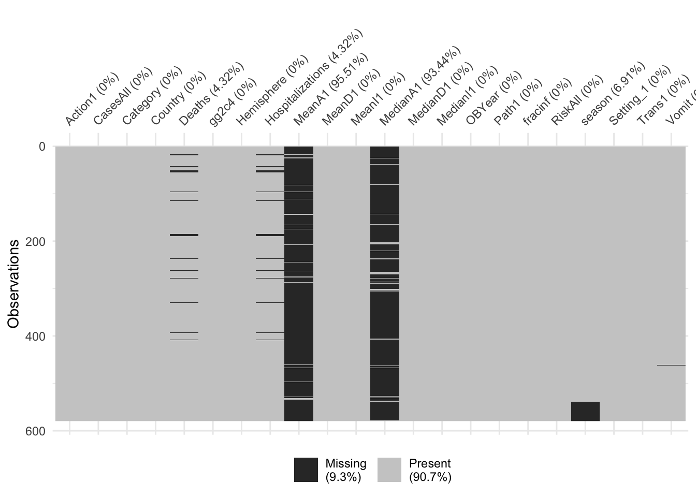
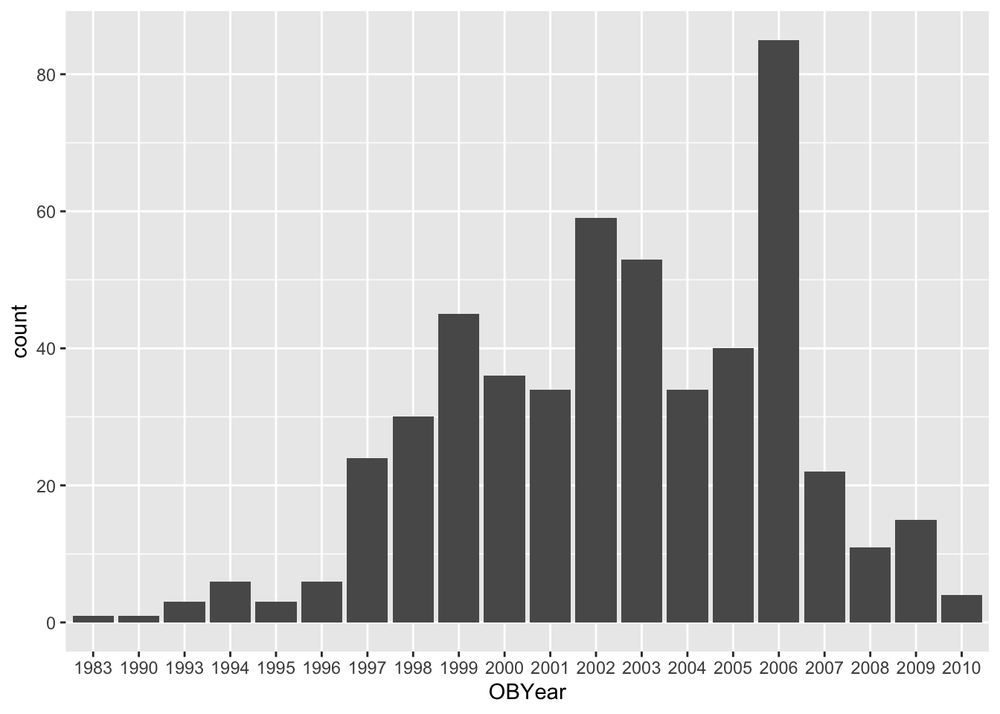
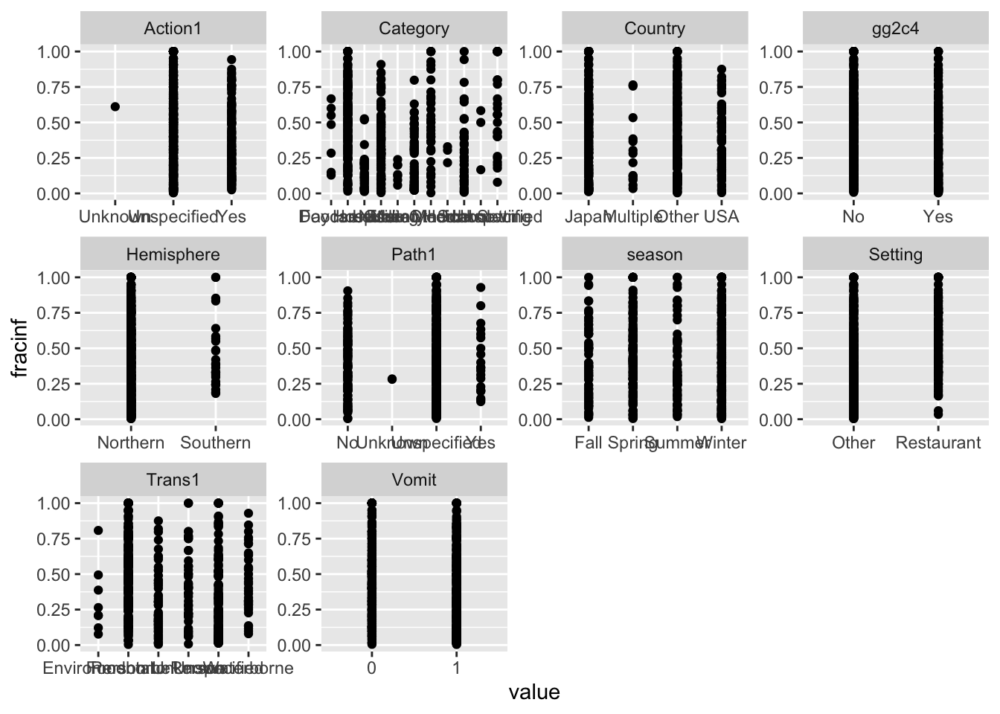

Continuous Outcome Analysis
Amanda Skarlupka
2019-10-18
Overview
This document will guide you through a few data analysis and model fitting tasks.
Below, I provide commentary and instructions, and you are expected to write all or some of the missing code to perform the steps I describe.
Note that I call the main data variable d. So if you see bits of code with that variable, it is the name of the data. You are welcome to give it different names, then just adjust the code snippets accordingly.
Project setup
We need a variety of different packages, which are loaded here. Install as needed. If you use others, load them here.
##
## Attaching package: 'dplyr'## The following objects are masked from 'package:stats':
##
## filter, lag## The following objects are masked from 'package:base':
##
## intersect, setdiff, setequal, unionlibrary('forcats')
library('ggplot2')
library('corrplot') #to make a correlation plot. You can use other options/packages.## corrplot 0.84 loaded## Loading required package: lattice## Loading required package: Formula## Loading required package: plotmo## Loading required package: plotrix## Loading required package: TeachingDemos## ── Attaching packages ─────────────────────────────────────────────────────── tidyverse 1.2.1 ──## ✔ tibble 2.1.3 ✔ purrr 0.3.2
## ✔ tibble 2.1.3 ✔ stringr 1.4.0## ── Conflicts ────────────────────────────────────────────────────────── tidyverse_conflicts() ──
## ✖ dplyr::filter() masks stats::filter()
## ✖ dplyr::lag() masks stats::lag()
## ✖ purrr::lift() masks caret::lift()Data loading
We will be exploring and fitting a dataset of norovirus outbreaks. You can look at the codebook, which briefly explains the meaning of each variable. If you are curious, you can check some previous papers that we published using (slighly different versions of) this dataset here and here.
#Write code that loads the dataset and does a quick check to make sure the data loaded ok (using e.g. `str` and `summary` or similar such functions).
data_raw <- read_csv("norodata.csv")## Parsed with column specification:
## cols(
## .default = col_double(),
## Author = col_character(),
## EpiCurve = col_character(),
## TDComment = col_character(),
## AHComment = col_character(),
## Trans1 = col_character(),
## Trans2 = col_character(),
## Trans2_O = col_character(),
## Trans3 = col_character(),
## Trans3_O = col_character(),
## Vehicle_1 = col_character(),
## Veh1 = col_character(),
## Veh1_D_1 = col_character(),
## Veh2 = col_character(),
## Veh2_D_1 = col_character(),
## Veh3 = col_character(),
## Veh3_D_1 = col_character(),
## PCRSect = col_character(),
## OBYear = col_character(),
## Hemisphere = col_character(),
## season = col_character()
## # ... with 44 more columns
## )## See spec(...) for full column specifications.## Warning: 2 parsing failures.
## row col expected actual file
## 1022 CD a double GGIIb 'norodata.csv'
## 1022 gge a double Sindlesham 'norodata.csv'## Classes 'spec_tbl_df', 'tbl_df', 'tbl' and 'data.frame': 1022 obs. of 139 variables:
## $ id : num 2 17 39 40 41 42 43 44 67 74 ...
## $ Author : chr "Akihara" "Becker" "Boxman" "Boxman" ...
## $ Pub_Year : num 2005 2000 2009 2009 2009 ...
## $ pubmedid : num 15841336 11071673 19205471 19205471 19205471 ...
## $ EpiCurve : chr "Y" "Y" "N" "N" ...
## $ TDComment : chr NA NA NA NA ...
## $ AHComment : chr NA NA NA NA ...
## $ Trans1 : chr "Unspecified" "Foodborne" "Foodborne" "Foodborne" ...
## $ Trans1_O : num 0 0 0 0 0 0 0 0 0 0 ...
## $ Trans2 : chr "(not applicable)" "Person to Person" "(not applicable)" "(not applicable)" ...
## $ Trans2_O : chr "0" "0" "0" "0" ...
## $ Trans3 : chr "(not applicable)" "(not applicable)" "(not applicable)" "(not applicable)" ...
## $ Trans3_O : chr "0" "0" "0" "0" ...
## $ Risk1 : num 0 108 130 4 25 ...
## $ Risk2 : num NA NA NA NA NA NA NA NA NA NA ...
## $ RiskAll : num 0 108 130 4 25 ...
## $ Cases1 : num 15 43 27 4 15 6 40 10 116 45 ...
## $ Cases2 : num NA 22 NA NA NA NA NA NA NA NA ...
## $ CasesAll : num 15 65 27 4 15 6 40 10 116 45 ...
## $ Rate1 : num NA 39.8 20.8 100 60 ...
## $ Rate2 : num NA NA NA NA NA NA NA NA NA NA ...
## $ RateAll : num 0 39.8 20.8 100 60 ...
## $ Hospitalizations : num 0 0 0 0 0 0 0 0 5 10 ...
## $ Deaths : num 0 0 0 0 0 0 0 0 0 0 ...
## $ Vehicle_1 : chr "0" "Boxed Lunch" "0" "0" ...
## $ Veh1 : chr "Unspecified" "Yes" "Unspecified" "Unspecified" ...
## $ Veh1_D_1 : chr "0" "Turkey Sandwich in boxed lunch" "0" "0" ...
## $ Veh2 : chr "No" "Yes" "No" "No" ...
## $ Veh2_D_1 : chr "0" "Football players" "0" "0" ...
## $ Veh3 : chr "No" "No" "No" "No" ...
## $ Veh3_D_1 : chr "0" "0" "0" "0" ...
## $ PCRSect : chr "Capsid" "Polymerase" "Both" "Both" ...
## $ OBYear : chr "1999" "1998" "2006" "2006" ...
## $ Hemisphere : chr "Northern" "Northern" "Northern" "Northern" ...
## $ season : chr "Fall" "Fall" "Fall" "Fall" ...
## $ MeanI1 : num 0 0 0 0 0 0 0 0 0 0 ...
## $ MedianI1 : num 0 37 0 0 0 0 0 0 0 31 ...
## $ Range_S_I1 : num 0 0 0 0 0 0 0 0 0 2 ...
## $ Range_L_I1 : num 0 0 0 0 0 0 0 0 0 69 ...
## $ MeanD1 : num 0 0 0 0 0 0 0 0 0 0 ...
## $ MedianD1 : num 0 36 0 0 0 0 0 0 0 48 ...
## $ Range_S_D1 : num 0 0 0 0 0 0 0 0 0 10 ...
## $ Range_L_D1 : num 0 0 0 0 0 0 0 0 0 168 ...
## $ MeanA1 : num NA NA NA NA NA NA NA NA NA NA ...
## $ MedianA1 : num NA NA NA NA NA NA NA NA NA NA ...
## $ Range_Y_A1 : chr "0.75" "0" "0" "0" ...
## $ Range_O_A1 : num 2 0 0 0 0 0 0 0 0 0 ...
## $ Action1 : chr "Unspecified" "Unspecified" "Unspecified" "Unspecified" ...
## $ Action2_1 : chr "0" "0" "0" "0" ...
## $ Secondary : chr "No" "Yes" "No" "No" ...
## $ MeanI2 : num 0 0 0 0 0 0 0 0 0 0 ...
## $ MedianI2 : num 0 0 0 0 0 0 0 0 0 0 ...
## $ Range_S_I2 : num 0 0 0 0 0 0 0 0 0 0 ...
## $ Range_L_I2 : num 0 0 0 0 0 0 0 0 0 0 ...
## $ MeanD2 : num 0 0 0 0 0 0 0 0 0 0 ...
## $ MedianD2 : num 0 0 0 0 0 0 0 0 0 0 ...
## $ Range_S_D2 : num 0 0 0 0 0 0 0 0 0 0 ...
## $ Range_L_D2 : num 0 0 0 0 0 0 0 0 0 0 ...
## $ Mea 2 : num 0 0 0 0 0 0 0 0 0 0 ...
## $ Media 2 : num 0 0 0 0 0 0 0 0 0 0 ...
## $ Range_Y_A2 : num 0 0 0 0 0 0 0 0 0 0 ...
## $ Range_O_A2 : num 0 0 0 0 0 0 0 0 0 0 ...
## $ Comments_1 : chr "Outbreak took place during a study on gasteroenteritus in a day care center. Same paper as outbreak # 2" "Secondary cases include both persons from NC and FL, some secondary cases were included in # at risk of primary infection" "VWA outbreak no. 68592 in Table 1" "VWA outbreak no. 69113 in Table 1" ...
## $ Path1 : chr "No" "No" "Unspecified" "Unspecified" ...
## $ Path2_1 : chr "0" "0" "0" "0" ...
## $ Country : chr "Japan" "USA" "Other" "Other" ...
## $ Category : chr "Daycare" "Foodservice" "Foodservice" "Foodservice" ...
## $ State : chr "0" "NC, FL" "0" "0" ...
## $ Setting_1 : chr "Daycare Center" "Boxed lunch, football game" "buffet" "restaurant" ...
## $ StartMonth : num 11 9 9 10 11 11 11 11 11 11 ...
## $ EndMonth : num 12 9 0 0 0 0 0 0 11 11 ...
## $ GGA : num 2 1 2 0 2 0 0 0 2 0 ...
## $ CA : num 4 0 4 0 4 0 0 0 4 0 ...
## $ SA : chr "Lordsdale" "Thistle Hall 1/91" "GII.4 2006a" "0" ...
## $ new_GGA : num 0 0 0 0 0 0 0 0 0 0 ...
## $ new_CA : num 0 0 0 0 0 0 0 0 0 0 ...
## $ new_SA : chr "0" "0" "0" "0" ...
## $ SA_resolved_from : chr NA NA NA NA ...
## $ GGB : num 0 0 0 0 0 0 0 0 0 0 ...
## $ CB : chr "0" "0" "0" "0" ...
## $ SB : chr "0" "0" "0" "0" ...
## $ new_GGB : num 0 0 0 0 0 0 0 0 0 0 ...
## $ new_CB : num 0 0 0 0 0 0 0 0 0 0 ...
## $ new_SB : chr "0" "0" "0" "0" ...
## $ SB_resolved_from : chr NA NA NA NA ...
## $ GGC : num 0 0 0 0 0 0 0 0 0 0 ...
## $ CC : num 0 0 0 0 0 0 0 0 0 0 ...
## $ SC : chr "0" "0" "0" "0" ...
## $ new_ggc : num 0 0 0 0 0 0 0 0 0 0 ...
## $ new_cc : num 0 0 0 0 0 0 0 0 0 0 ...
## $ new_sc : chr "0" "0" "0" "0" ...
## $ SC_resolved_from : chr NA NA NA NA ...
## $ GGD : num 0 0 0 0 0 0 0 0 0 0 ...
## $ CD : num 0 0 0 0 0 0 0 0 0 0 ...
## $ SD : chr "0" "0" "0" "0" ...
## $ new_ggd : num 0 0 0 0 0 0 0 0 0 0 ...
## $ new_cd : num 0 0 0 0 0 0 0 0 0 0 ...
## $ new_sd : num 0 0 0 0 0 0 0 0 0 0 ...
## $ SD_resolved_from : logi NA NA NA NA NA NA ...
## [list output truncated]
## - attr(*, "problems")=Classes 'tbl_df', 'tbl' and 'data.frame': 2 obs. of 5 variables:
## ..$ row : int 1022 1022
## ..$ col : chr "CD" "gge"
## ..$ expected: chr "a double" "a double"
## ..$ actual : chr "GGIIb" "Sindlesham"
## ..$ file : chr "'norodata.csv'" "'norodata.csv'"
## - attr(*, "spec")=
## .. cols(
## .. id = col_double(),
## .. Author = col_character(),
## .. Pub_Year = col_double(),
## .. pubmedid = col_double(),
## .. EpiCurve = col_character(),
## .. TDComment = col_character(),
## .. AHComment = col_character(),
## .. Trans1 = col_character(),
## .. Trans1_O = col_double(),
## .. Trans2 = col_character(),
## .. Trans2_O = col_character(),
## .. Trans3 = col_character(),
## .. Trans3_O = col_character(),
## .. Risk1 = col_double(),
## .. Risk2 = col_double(),
## .. RiskAll = col_double(),
## .. Cases1 = col_double(),
## .. Cases2 = col_double(),
## .. CasesAll = col_double(),
## .. Rate1 = col_double(),
## .. Rate2 = col_double(),
## .. RateAll = col_double(),
## .. Hospitalizations = col_double(),
## .. Deaths = col_double(),
## .. Vehicle_1 = col_character(),
## .. Veh1 = col_character(),
## .. Veh1_D_1 = col_character(),
## .. Veh2 = col_character(),
## .. Veh2_D_1 = col_character(),
## .. Veh3 = col_character(),
## .. Veh3_D_1 = col_character(),
## .. PCRSect = col_character(),
## .. OBYear = col_character(),
## .. Hemisphere = col_character(),
## .. season = col_character(),
## .. MeanI1 = col_double(),
## .. MedianI1 = col_double(),
## .. Range_S_I1 = col_double(),
## .. Range_L_I1 = col_double(),
## .. MeanD1 = col_double(),
## .. MedianD1 = col_double(),
## .. Range_S_D1 = col_double(),
## .. Range_L_D1 = col_double(),
## .. MeanA1 = col_double(),
## .. MedianA1 = col_double(),
## .. Range_Y_A1 = col_character(),
## .. Range_O_A1 = col_double(),
## .. Action1 = col_character(),
## .. Action2_1 = col_character(),
## .. Secondary = col_character(),
## .. MeanI2 = col_double(),
## .. MedianI2 = col_double(),
## .. Range_S_I2 = col_double(),
## .. Range_L_I2 = col_double(),
## .. MeanD2 = col_double(),
## .. MedianD2 = col_double(),
## .. Range_S_D2 = col_double(),
## .. Range_L_D2 = col_double(),
## .. `Mea 2` = col_double(),
## .. `Media 2` = col_double(),
## .. Range_Y_A2 = col_double(),
## .. Range_O_A2 = col_double(),
## .. Comments_1 = col_character(),
## .. Path1 = col_character(),
## .. Path2_1 = col_character(),
## .. Country = col_character(),
## .. Category = col_character(),
## .. State = col_character(),
## .. Setting_1 = col_character(),
## .. StartMonth = col_double(),
## .. EndMonth = col_double(),
## .. GGA = col_double(),
## .. CA = col_double(),
## .. SA = col_character(),
## .. new_GGA = col_double(),
## .. new_CA = col_double(),
## .. new_SA = col_character(),
## .. SA_resolved_from = col_character(),
## .. GGB = col_double(),
## .. CB = col_character(),
## .. SB = col_character(),
## .. new_GGB = col_double(),
## .. new_CB = col_double(),
## .. new_SB = col_character(),
## .. SB_resolved_from = col_character(),
## .. GGC = col_double(),
## .. CC = col_double(),
## .. SC = col_character(),
## .. new_ggc = col_double(),
## .. new_cc = col_double(),
## .. new_sc = col_character(),
## .. SC_resolved_from = col_character(),
## .. GGD = col_double(),
## .. CD = col_double(),
## .. SD = col_character(),
## .. new_ggd = col_double(),
## .. new_cd = col_double(),
## .. new_sd = col_double(),
## .. SD_resolved_from = col_logical(),
## .. StrainOther = col_character(),
## .. strainother_rc = col_character(),
## .. gge = col_double(),
## .. ce = col_double(),
## .. se = col_character(),
## .. SE_resolved_from = col_character(),
## .. ggf = col_double(),
## .. cf = col_double(),
## .. sf = col_character(),
## .. ggg = col_double(),
## .. cg = col_double(),
## .. sg = col_character(),
## .. ggh = col_double(),
## .. ch = col_double(),
## .. sh = col_character(),
## .. ggi = col_double(),
## .. ci = col_double(),
## .. si = col_character(),
## .. ggj = col_double(),
## .. cj = col_double(),
## .. sj = col_character(),
## .. Country2 = col_character(),
## .. Veh1_D_2 = col_character(),
## .. Veh2_D_2 = col_character(),
## .. Veh3_D_2 = col_character(),
## .. Action2_2 = col_character(),
## .. Comments_2 = col_character(),
## .. Path2_2 = col_character(),
## .. Setting_2 = col_character(),
## .. category1 = col_character(),
## .. strainothergg2c4 = col_double(),
## .. gg2c4 = col_character(),
## .. Vomit = col_double(),
## .. IncInd = col_double(),
## .. SymInd = col_double(),
## .. PooledLat = col_double(),
## .. PooledSym = col_double(),
## .. PooledAge = col_double(),
## .. IndividualLatent = col_logical(),
## .. IndividualSymptomatic = col_character()
## .. )## # A tibble: 6 x 139
## id Author Pub_Year pubmedid EpiCurve TDComment AHComment Trans1
## <dbl> <chr> <dbl> <dbl> <chr> <chr> <chr> <chr>
## 1 2 Akiha… 2005 15841336 Y <NA> <NA> Unspe…
## 2 17 Becker 2000 11071673 Y <NA> <NA> Foodb…
## 3 39 Boxman 2009 19205471 N <NA> <NA> Foodb…
## 4 40 Boxman 2009 19205471 N <NA> <NA> Foodb…
## 5 41 Boxman 2009 19205471 N <NA> <NA> Foodb…
## 6 42 Boxman 2009 19205471 N <NA> <NA> Foodb…
## # … with 131 more variables: Trans1_O <dbl>, Trans2 <chr>, Trans2_O <chr>,
## # Trans3 <chr>, Trans3_O <chr>, Risk1 <dbl>, Risk2 <dbl>, RiskAll <dbl>,
## # Cases1 <dbl>, Cases2 <dbl>, CasesAll <dbl>, Rate1 <dbl>, Rate2 <dbl>,
## # RateAll <dbl>, Hospitalizations <dbl>, Deaths <dbl>, Vehicle_1 <chr>,
## # Veh1 <chr>, Veh1_D_1 <chr>, Veh2 <chr>, Veh2_D_1 <chr>, Veh3 <chr>,
## # Veh3_D_1 <chr>, PCRSect <chr>, OBYear <chr>, Hemisphere <chr>,
## # season <chr>, MeanI1 <dbl>, MedianI1 <dbl>, Range_S_I1 <dbl>,
## # Range_L_I1 <dbl>, MeanD1 <dbl>, MedianD1 <dbl>, Range_S_D1 <dbl>,
## # Range_L_D1 <dbl>, MeanA1 <dbl>, MedianA1 <dbl>, Range_Y_A1 <chr>,
## # Range_O_A1 <dbl>, Action1 <chr>, Action2_1 <chr>, Secondary <chr>,
## # MeanI2 <dbl>, MedianI2 <dbl>, Range_S_I2 <dbl>, Range_L_I2 <dbl>,
## # MeanD2 <dbl>, MedianD2 <dbl>, Range_S_D2 <dbl>, Range_L_D2 <dbl>, `Mea
## # 2` <dbl>, `Media 2` <dbl>, Range_Y_A2 <dbl>, Range_O_A2 <dbl>,
## # Comments_1 <chr>, Path1 <chr>, Path2_1 <chr>, Country <chr>,
## # Category <chr>, State <chr>, Setting_1 <chr>, StartMonth <dbl>,
## # EndMonth <dbl>, GGA <dbl>, CA <dbl>, SA <chr>, new_GGA <dbl>,
## # new_CA <dbl>, new_SA <chr>, SA_resolved_from <chr>, GGB <dbl>,
## # CB <chr>, SB <chr>, new_GGB <dbl>, new_CB <dbl>, new_SB <chr>,
## # SB_resolved_from <chr>, GGC <dbl>, CC <dbl>, SC <chr>, new_ggc <dbl>,
## # new_cc <dbl>, new_sc <chr>, SC_resolved_from <chr>, GGD <dbl>,
## # CD <dbl>, SD <chr>, new_ggd <dbl>, new_cd <dbl>, new_sd <dbl>,
## # SD_resolved_from <lgl>, StrainOther <chr>, strainother_rc <chr>,
## # gge <dbl>, ce <dbl>, se <chr>, SE_resolved_from <chr>, ggf <dbl>,
## # cf <dbl>, sf <chr>, …## Observations: 1,022
## Variables: 139
## $ id <dbl> 2, 17, 39, 40, 41, 42, 43, 44, 67, 74, 75,…
## $ Author <chr> "Akihara", "Becker", "Boxman", "Boxman", "…
## $ Pub_Year <dbl> 2005, 2000, 2009, 2009, 2009, 2009, 2009, …
## $ pubmedid <dbl> 15841336, 11071673, 19205471, 19205471, 19…
## $ EpiCurve <chr> "Y", "Y", "N", "N", "N", "N", "N", "N", "N…
## $ TDComment <chr> NA, NA, NA, NA, NA, NA, NA, NA, NA, NA, NA…
## $ AHComment <chr> NA, NA, NA, NA, NA, NA, NA, NA, NA, NA, NA…
## $ Trans1 <chr> "Unspecified", "Foodborne", "Foodborne", "…
## $ Trans1_O <dbl> 0, 0, 0, 0, 0, 0, 0, 0, 0, 0, 0, 0, 0, 0, …
## $ Trans2 <chr> "(not applicable)", "Person to Person", "(…
## $ Trans2_O <chr> "0", "0", "0", "0", "0", "0", "0", "0", "0…
## $ Trans3 <chr> "(not applicable)", "(not applicable)", "(…
## $ Trans3_O <chr> "0", "0", "0", "0", "0", "0", "0", "0", "0…
## $ Risk1 <dbl> 0.00000, 108.00000, 130.00000, 4.00000, 25…
## $ Risk2 <dbl> NA, NA, NA, NA, NA, NA, NA, NA, NA, NA, NA…
## $ RiskAll <dbl> 0.00000, 108.00000, 130.00000, 4.00000, 25…
## $ Cases1 <dbl> 15, 43, 27, 4, 15, 6, 40, 10, 116, 45, 180…
## $ Cases2 <dbl> NA, 22, NA, NA, NA, NA, NA, NA, NA, NA, 4,…
## $ CasesAll <dbl> 15, 65, 27, 4, 15, 6, 40, 10, 116, 45, 184…
## $ Rate1 <dbl> NA, 39.814815, 20.769231, 100.000000, 60.0…
## $ Rate2 <dbl> NA, NA, NA, NA, NA, NA, NA, NA, NA, NA, NA…
## $ RateAll <dbl> 0.000000, 39.814815, 20.769231, 100.000000…
## $ Hospitalizations <dbl> 0, 0, 0, 0, 0, 0, 0, 0, 5, 10, 3, 0, 0, 0,…
## $ Deaths <dbl> 0, 0, 0, 0, 0, 0, 0, 0, 0, 0, 0, 0, 0, 0, …
## $ Vehicle_1 <chr> "0", "Boxed Lunch", "0", "0", "0", "0", "0…
## $ Veh1 <chr> "Unspecified", "Yes", "Unspecified", "Unsp…
## $ Veh1_D_1 <chr> "0", "Turkey Sandwich in boxed lunch", "0"…
## $ Veh2 <chr> "No", "Yes", "No", "No", "No", "No", "No",…
## $ Veh2_D_1 <chr> "0", "Football players", "0", "0", "0", "0…
## $ Veh3 <chr> "No", "No", "No", "No", "No", "No", "No", …
## $ Veh3_D_1 <chr> "0", "0", "0", "0", "0", "0", "0", "0", "0…
## $ PCRSect <chr> "Capsid", "Polymerase", "Both", "Both", "B…
## $ OBYear <chr> "1999", "1998", "2006", "2006", "2006", "2…
## $ Hemisphere <chr> "Northern", "Northern", "Northern", "North…
## $ season <chr> "Fall", "Fall", "Fall", "Fall", "Fall", "F…
## $ MeanI1 <dbl> 0, 0, 0, 0, 0, 0, 0, 0, 0, 0, 0, 0, 0, 0, …
## $ MedianI1 <dbl> 0, 37, 0, 0, 0, 0, 0, 0, 0, 31, 34, 33, 0,…
## $ Range_S_I1 <dbl> 0, 0, 0, 0, 0, 0, 0, 0, 0, 2, 0, 6, 0, 0, …
## $ Range_L_I1 <dbl> 0, 0, 0, 0, 0, 0, 0, 0, 0, 69, 0, 96, 0, 0…
## $ MeanD1 <dbl> 0, 0, 0, 0, 0, 0, 0, 0, 0, 0, 0, 0, 24, 0,…
## $ MedianD1 <dbl> 0, 36, 0, 0, 0, 0, 0, 0, 0, 48, 37, 24, 0,…
## $ Range_S_D1 <dbl> 0, 0, 0, 0, 0, 0, 0, 0, 0, 10, 0, 5, 4, 0,…
## $ Range_L_D1 <dbl> 0, 0, 0, 0, 0, 0, 0, 0, 0, 168, 0, 120, 33…
## $ MeanA1 <dbl> NA, NA, NA, NA, NA, NA, NA, NA, NA, NA, NA…
## $ MedianA1 <dbl> NA, NA, NA, NA, NA, NA, NA, NA, NA, NA, NA…
## $ Range_Y_A1 <chr> "0.75", "0", "0", "0", "0", "0", "0", "0",…
## $ Range_O_A1 <dbl> 2, 0, 0, 0, 0, 0, 0, 0, 0, 0, 0, 0, 0, 0, …
## $ Action1 <chr> "Unspecified", "Unspecified", "Unspecified…
## $ Action2_1 <chr> "0", "0", "0", "0", "0", "0", "0", "0", "0…
## $ Secondary <chr> "No", "Yes", "No", "No", "No", "No", "No",…
## $ MeanI2 <dbl> 0, 0, 0, 0, 0, 0, 0, 0, 0, 0, 0, 0, 0, 0, …
## $ MedianI2 <dbl> 0, 0, 0, 0, 0, 0, 0, 0, 0, 0, 0, 0, 0, 0, …
## $ Range_S_I2 <dbl> 0, 0, 0, 0, 0, 0, 0, 0, 0, 0, 0, 0, 0, 0, …
## $ Range_L_I2 <dbl> 0, 0, 0, 0, 0, 0, 0, 0, 0, 0, 0, 0, 0, 0, …
## $ MeanD2 <dbl> 0, 0, 0, 0, 0, 0, 0, 0, 0, 0, 0, 0, 0, 0, …
## $ MedianD2 <dbl> 0, 0, 0, 0, 0, 0, 0, 0, 0, 0, 0, 0, 0, 0, …
## $ Range_S_D2 <dbl> 0, 0, 0, 0, 0, 0, 0, 0, 0, 0, 0, 0, 0, 0, …
## $ Range_L_D2 <dbl> 0, 0, 0, 0, 0, 0, 0, 0, 0, 0, 0, 0, 0, 0, …
## $ `Mea 2` <dbl> 0, 0, 0, 0, 0, 0, 0, 0, 0, 0, 0, 0, 0, 0, …
## $ `Media 2` <dbl> 0, 0, 0, 0, 0, 0, 0, 0, 0, 0, 0, 0, 0, 0, …
## $ Range_Y_A2 <dbl> 0, 0, 0, 0, 0, 0, 0, 0, 0, 0, 0, 0, 0, 0, …
## $ Range_O_A2 <dbl> 0, 0, 0, 0, 0, 0, 0, 0, 0, 0, 0, 0, 0, 0, …
## $ Comments_1 <chr> "Outbreak took place during a study on gas…
## $ Path1 <chr> "No", "No", "Unspecified", "Unspecified", …
## $ Path2_1 <chr> "0", "0", "0", "0", "0", "0", "0", "0", "0…
## $ Country <chr> "Japan", "USA", "Other", "Other", "Other",…
## $ Category <chr> "Daycare", "Foodservice", "Foodservice", "…
## $ State <chr> "0", "NC, FL", "0", "0", "0", "0", "0", "0…
## $ Setting_1 <chr> "Daycare Center", "Boxed lunch, football g…
## $ StartMonth <dbl> 11, 9, 9, 10, 11, 11, 11, 11, 11, 11, 11, …
## $ EndMonth <dbl> 12, 9, 0, 0, 0, 0, 0, 0, 11, 11, 11, 11, 1…
## $ GGA <dbl> 2, 1, 2, 0, 2, 0, 0, 0, 2, 0, 0, 0, 0, 0, …
## $ CA <dbl> 4, 0, 4, 0, 4, 0, 0, 0, 4, 0, 0, 0, 0, 0, …
## $ SA <chr> "Lordsdale", "Thistle Hall 1/91", "GII.4 2…
## $ new_GGA <dbl> 0, 0, 0, 0, 0, 0, 0, 0, 0, 0, 0, 0, 0, 0, …
## $ new_CA <dbl> 0, 0, 0, 0, 0, 0, 0, 0, 0, 0, 0, 0, 0, 0, …
## $ new_SA <chr> "0", "0", "0", "0", "0", "0", "0", "0", "0…
## $ SA_resolved_from <chr> NA, NA, NA, NA, NA, NA, NA, NA, NA, NA, NA…
## $ GGB <dbl> 0, 0, 0, 0, 0, 0, 0, 0, 0, 0, 0, 0, 0, 0, …
## $ CB <chr> "0", "0", "0", "0", "0", "0", "0", "0", "0…
## $ SB <chr> "0", "0", "0", "0", "0", "0", "0", "0", "0…
## $ new_GGB <dbl> 0, 0, 0, 0, 0, 0, 0, 0, 0, 0, 0, 0, 0, 0, …
## $ new_CB <dbl> 0, 0, 0, 0, 0, 0, 0, 0, 0, 0, 0, 0, 0, 0, …
## $ new_SB <chr> "0", "0", "0", "0", "0", "0", "0", "0", "0…
## $ SB_resolved_from <chr> NA, NA, NA, NA, NA, NA, NA, NA, NA, NA, NA…
## $ GGC <dbl> 0, 0, 0, 0, 0, 0, 0, 0, 0, 0, 0, 0, 0, 0, …
## $ CC <dbl> 0, 0, 0, 0, 0, 0, 0, 0, 0, 0, 0, 0, 0, 0, …
## $ SC <chr> "0", "0", "0", "0", "0", "0", "0", "0", "0…
## $ new_ggc <dbl> 0, 0, 0, 0, 0, 0, 0, 0, 0, 0, 0, 0, 0, 0, …
## $ new_cc <dbl> 0, 0, 0, 0, 0, 0, 0, 0, 0, 0, 0, 0, 0, 0, …
## $ new_sc <chr> "0", "0", "0", "0", "0", "0", "0", "0", "0…
## $ SC_resolved_from <chr> NA, NA, NA, NA, NA, NA, NA, NA, NA, NA, NA…
## $ GGD <dbl> 0, 0, 0, 0, 0, 0, 0, 0, 0, 0, 0, 0, 0, 0, …
## $ CD <dbl> 0, 0, 0, 0, 0, 0, 0, 0, 0, 0, 0, 0, 0, 0, …
## $ SD <chr> "0", "0", "0", "0", "0", "0", "0", "0", "0…
## $ new_ggd <dbl> 0, 0, 0, 0, 0, 0, 0, 0, 0, 0, 0, 0, 0, 0, …
## $ new_cd <dbl> 0, 0, 0, 0, 0, 0, 0, 0, 0, 0, 0, 0, 0, 0, …
## $ new_sd <dbl> 0, 0, 0, 0, 0, 0, 0, 0, 0, 0, 0, 0, 0, 0, …
## $ SD_resolved_from <lgl> NA, NA, NA, NA, NA, NA, NA, NA, NA, NA, NA…
## $ StrainOther <chr> "0", "0", "0", "0", "0", "0", "0", "0", "G…
## $ strainother_rc <chr> "0", "0", "0", "0", "0", "0", "0", "0", "0…
## $ gge <dbl> 0, 0, 0, 0, 0, 0, 0, 0, 2, 0, 0, 0, 0, 0, …
## $ ce <dbl> 0, 0, 0, 0, 0, 0, 0, 0, 4, 0, 0, 0, 0, 0, …
## $ se <chr> "0", "0", "0", "0", "0", "0", "0", "0", "G…
## $ SE_resolved_from <chr> NA, NA, NA, NA, NA, NA, NA, NA, "abstracti…
## $ ggf <dbl> 0, 0, 0, 0, 0, 0, 0, 0, 0, 0, 0, 0, 0, 0, …
## $ cf <dbl> 0, 0, 0, 0, 0, 0, 0, 0, 0, 0, 0, 0, 0, 0, …
## $ sf <chr> "0", "0", "0", "0", "0", "0", "0", "0", "0…
## $ ggg <dbl> 0, 0, 0, 0, 0, 0, 0, 0, 0, 0, 0, 0, 0, 0, …
## $ cg <dbl> 0, 0, 0, 0, 0, 0, 0, 0, 0, 0, 0, 0, 0, 0, …
## $ sg <chr> "0", "0", "0", "0", "0", "0", "0", "0", "0…
## $ ggh <dbl> 0, 0, 0, 0, 0, 0, 0, 0, 0, 0, 0, 0, 0, 0, …
## $ ch <dbl> 0, 0, 0, 0, 0, 0, 0, 0, 0, 0, 0, 0, 0, 0, …
## $ sh <chr> "0", "0", "0", "0", "0", "0", "0", "0", "0…
## $ ggi <dbl> 0, 0, 0, 0, 0, 0, 0, 0, 0, 0, 0, 0, 0, 0, …
## $ ci <dbl> 0, 0, 0, 0, 0, 0, 0, 0, 0, 0, 0, 0, 0, 0, …
## $ si <chr> "0", "0", "0", "0", "0", "0", "0", "0", "0…
## $ ggj <dbl> 0, 0, 0, 0, 0, 0, 0, 0, 0, 0, 0, 0, 0, 0, …
## $ cj <dbl> 0, 0, 0, 0, 0, 0, 0, 0, 0, 0, 0, 0, 0, 0, …
## $ sj <chr> "0", "0", "0", "0", "0", "0", "0", "0", "0…
## $ Country2 <chr> "0", "0", "The Netherlands", "The Netherla…
## $ Veh1_D_2 <chr> "0", "Boxed Lunch", "0", "0", "0", "0", "0…
## $ Veh2_D_2 <chr> "0", "0", "0", "0", "0", "0", "0", "0", "0…
## $ Veh3_D_2 <chr> "0", "0", "0", "0", "0", "0", "0", "0", "0…
## $ Action2_2 <chr> "0", "0", "0", "0", "0", "0", "0", "0", "0…
## $ Comments_2 <chr> "Limited data", "0", "Outbreak 19 of 26 Bo…
## $ Path2_2 <chr> "0", "0", "0", "0", "0", "0", "0", "0", "0…
## $ Setting_2 <chr> "0", "0", "Buffet", "Restaurant", "Buffet"…
## $ category1 <chr> "School/Daycare", "Foodservice", "Foodserv…
## $ strainothergg2c4 <dbl> 0, 0, 0, 0, 0, 0, 0, 0, 0, 0, 0, 0, 0, 0, …
## $ gg2c4 <chr> "Yes", NA, "Yes", NA, "Yes", NA, NA, NA, "…
## $ Vomit <dbl> 1, 1, 1, 1, 1, 1, 1, 1, 1, 1, 1, 1, 1, 1, …
## $ IncInd <dbl> 0, 0, 0, 0, 0, 0, 0, 0, 0, 0, 0, 0, 0, 0, …
## $ SymInd <dbl> 0, 0, 0, 0, 0, 0, 0, 0, 0, 0, 0, 0, 0, 0, …
## $ PooledLat <dbl> 0, 37, 0, 0, 0, 0, 0, 0, 0, 31, 34, 33, 0,…
## $ PooledSym <dbl> 0, 36, 0, 0, 0, 0, 0, 0, 0, 48, 37, 24, 24…
## $ PooledAge <dbl> 0, 0, 0, 0, 0, 0, 0, 0, 0, 0, 0, 0, 0, 0, …
## $ IndividualLatent <lgl> NA, NA, NA, NA, NA, NA, NA, NA, NA, NA, NA…
## $ IndividualSymptomatic <chr> NA, NA, NA, NA, NA, NA, NA, NA, NA, NA, NA…Data exploration and cleaning
Investigating the outcome of interest
Let’s assume that our main outcome of interest is the fraction of individuals that become infected in a given outbreak. The data reports that outcome (called RateAll), but we’ll also compute it ourselves so that we can practice creating new variables. To do so, take a look at the data (maybe peek at the Codebook) and decide which of the existing variables you should use to compute the new one. This new outcome variable will be added to the data frame.
# Use the `mutate()` function from the `dplyr` package to create a new column with this value. Call the new variable `fracinf`.
d <- data_raw %>%
dplyr::mutate(fracinf = CasesAll / RiskAll)Note the notation dplyr:: in front of mutate. This is not strictly necessary, but it helps in 2 ways. First, this tells the reader explicitly from which package the function comes. This is useful for quickly looking at the help file of the function, or if we want to adjust which packages are loaded/used. It also avoids occasional confusion if a function exists more than once (e.g. filter exists both in the stats and dplyr package). If the package is not specified, R takes the function from the package that was loaded last. This can sometimes produce strange error messages. I thus often (but not always) write the package name in front of the function.
As you see in the Rmd file, the previous text box is created by placing texts between the ::: symbols and specifying some name. This allows you to apply your own styling to specific parts of the text. You define your style in a css file (here called customstyles.css), and you need to list that file in the _site.yml file. The latter file also lets you change the overall theme. You can choose from the library of free Bootswatch themes.
Use both text summaries and plots to take a look at the new variable you created to see if everything looks ok or if we need further cleaning.
#Write code that takes a look at the values of the `fracinf` variable you created. Look at both text summaries and a figure.
summary(d$fracinf)## Min. 1st Qu. Median Mean 3rd Qu. Max. NA's
## 0.00399 0.28832 0.63079 Inf Inf Inf 120histogram <- d %>%
ggplot(aes(x = fracinf)) +
geom_histogram(binwidth = .05) +
labs(title = "Distribution of Infected Case Rates of Norovirus Outbreaks", x = "Fraction Infected", y = "Count")
histogram## Warning: Removed 443 rows containing non-finite values (stat_bin).We notice there are 120 NAs in this variable and the distribution is not normal. The latter is somewhat expected since our variable is a proportion, so it has to be between 0 and 1. There are also a lot of infinite values. Understand where they come from.
#This is me trying to understand where the infinite values come from. I'm going to select only the variables that I'm interested in so that the data is easier to look at. I think the infinite values might be coming from dividing the 0/0 but that doesn't really make sense because why would there be a case report. So I'll double check
infinite_values <- d %>%
select(c(CasesAll, RiskAll, fracinf, RateAll))
head(infinite_values)## # A tibble: 6 x 4
## CasesAll RiskAll fracinf RateAll
## <dbl> <dbl> <dbl> <dbl>
## 1 15 0 Inf 0
## 2 65 108 0.602 39.8
## 3 27 130 0.208 20.8
## 4 4 4 1 100
## 5 15 25 0.6 60
## 6 6 8 0.75 75#The infinite values are coming from where RiskAll is equal to 0, giving an equation of 0/x. I wonder if there is any instances where CasesAll is 0.
infinite_values %>%
filter(CasesAll == 0)## # A tibble: 0 x 4
## # … with 4 variables: CasesAll <dbl>, RiskAll <dbl>, fracinf <dbl>,
## # RateAll <dbl>Let’s take a look at the RateAll variable recorded in the dataset and compare it to ours. First, create a plot that lets you quickly see if/how the variables differ.
# Plot one variable on the x axis, the other on the y axis
# also plot the difference of the 2 variables
# make sure you adjust so both are in the same units
d %>%
ggplot(aes(x = fracinf, y = (RateAll / 100))) +
geom_point() +
labs(x = "Fraction infected: RiskAll/CasesAll", y = "RateAll (Provided)")## Warning: Removed 120 rows containing missing values (geom_point).## Warning: Removed 120 rows containing missing values (geom_point).## Warning: Removed 120 rows containing missing values (geom_point).Both ways of plotting the data show that for most outbreaks, the two ways of getting the outcome agree. So that’s good. But we need to look closer and resolve the problem with infinite values above. Check to see what the RateAll variable has for those infinite values.
#Write code that looks at the values of RateAll where we have infinite values
infinite_values %>%
filter(fracinf == Inf) %>%
head()## # A tibble: 6 x 4
## CasesAll RiskAll fracinf RateAll
## <dbl> <dbl> <dbl> <dbl>
## 1 15 0 Inf 0
## 2 184 0 Inf 0
## 3 704 0 Inf 0
## 4 20 0 Inf 0
## 5 14 0 Inf 0
## 6 14 0 Inf 0## # A tibble: 1 x 1
## avg
## <dbl>
## 1 0I found that all of the reported values are 0. So what makes more sense? You should have figured out that the infinite values in our computed variables arise because the RiskAll variable is 0. That variable contains the total number of persons at risk for an outbreak. If nobody is at risk of getting infected, of course, we can’t get any infected. So RateAll being 0 is technically correct. But does it make sense to include “outbreaks” in our analysis where nobody is at risk of getting infected? One should question how those got into the spreadsheet in the first place.
Having to deal with “weirdness” in your data like this example is common. You often need to make a decision based on best judgment.
Here, I think that if nobody is at risk, we shouldn’t include those outbreaks in further analysis. Thus, we’ll go with our computed outcome and remove all observations that have missing or infinite values for the outcome of interest, since those can’t be used for model fitting. Thus, we go ahead and remove any observations that have un-useable values in the outcome.
#Write code that removes all observations that have an outcome that is not very useful, i.e. either NA or infinity. Then look at the outcome variable again to make sure things are fixed. Also check the size of the new dataset to see by how much it shrunk.
d_red <- d %>%
filter(RiskAll != 0)
#Doing for my smaller dataset just to make the table easier to view
infinite_values_red <- infinite_values %>%
filter(RiskAll != 0)You should find that we lost a lot of data, we are down to 579 observations (from a starting 1022). That would be troublesome for most studies if that would mean subjects drop out (that could lead to bias). Here it’s maybe less problematic since each observation is an outbreak collected from the literature. Still, dropping this many could lead to bias if all the ones that had NA or Infinity were somehow systematically different. It would be useful to look into and discuss in a real analysis.
Wrangling the predictors
Not uncommon for real datasets, this one has a lot of variables. Many are not too meaningful for modeling. Our question is what predicts the fraction of those that get infected, i.e., the new outcome we just created. We should first narrow down the predictor variables of interest based on scientific grounds.
For this analysis exercise, we just pick the following variables for further analysis: Action1, CasesAll, Category, Country, Deaths, GG2C4, Hemisphere, Hospitalizations, MeanA1, MeanD1, MeanI1, MedianA1, MedianD1, MedianI1, OBYear, Path1, RiskAll, Season, Setting, Trans1, Vomit. Of course, we also need to keep our outcome of interest.
Note that - as often happens for real data - there are inconsistencies between the codebook and the actual datasheet. Here, names of variables and spelling in the codebook do not fully agree with the data. The above list of variables is based on codebook, and you need to make sure you get the right names from the data when selecting those variables.
#write code to select the specified variables
d_reduced <- d_red %>%
select(c(Action1, CasesAll, Category, Country, Deaths, gg2c4, Hemisphere, Hospitalizations, MeanA1, MeanD1, MeanI1, MedianA1, MedianD1, MedianI1, OBYear, Path1, fracinf, RiskAll, season, Setting_1, Trans1, Vomit))
str(d_reduced)## Classes 'spec_tbl_df', 'tbl_df', 'tbl' and 'data.frame': 579 obs. of 22 variables:
## $ Action1 : chr "Unspecified" "Unspecified" "Unspecified" "Unspecified" ...
## $ CasesAll : num 65 27 4 15 6 40 10 116 45 191 ...
## $ Category : chr "Foodservice" "Foodservice" "Foodservice" "Foodservice" ...
## $ Country : chr "USA" "Other" "Other" "Other" ...
## $ Deaths : num 0 0 0 0 0 0 0 0 0 0 ...
## $ gg2c4 : chr NA "Yes" NA "Yes" ...
## $ Hemisphere : chr "Northern" "Northern" "Northern" "Northern" ...
## $ Hospitalizations: num 0 0 0 0 0 0 0 5 10 0 ...
## $ MeanA1 : num NA NA NA NA NA NA NA NA NA NA ...
## $ MeanD1 : num 0 0 0 0 0 0 0 0 0 0 ...
## $ MeanI1 : num 0 0 0 0 0 0 0 0 0 0 ...
## $ MedianA1 : num NA NA NA NA NA NA NA NA NA NA ...
## $ MedianD1 : num 36 0 0 0 0 0 0 0 48 24 ...
## $ MedianI1 : num 37 0 0 0 0 0 0 0 31 33 ...
## $ OBYear : chr "1998" "2006" "2006" "2006" ...
## $ Path1 : chr "No" "Unspecified" "Unspecified" "Unspecified" ...
## $ fracinf : num 0.602 0.208 1 0.6 0.75 ...
## $ RiskAll : num 108 130 4 25 8 ...
## $ season : chr "Fall" "Fall" "Fall" "Fall" ...
## $ Setting_1 : chr "Boxed lunch, football game" "buffet" "restaurant" "buffet" ...
## $ Trans1 : chr "Foodborne" "Foodborne" "Foodborne" "Foodborne" ...
## $ Vomit : num 1 1 1 1 1 1 1 1 1 1 ...Your reduced dataset should contain 579 observations and 22 variables.
With this reduced dataset, we’ll likely still need to perform further cleaning. We can start by looking at missing data. While the summary function gives that information, it is somewhat tedious to pull out. We can just focus on NA for each variable and look at the text output, or for lots of predictors, a graphical view is easier to understand. The latter has the advantage of showing potential clustering of missing values.
# this code prints number of missing for each variable (assuming your dataframe is called d)
# print(colSums(is.na(d)))
print(colSums(is.na(d_reduced)))## Action1 CasesAll Category Country
## 0 0 0 0
## Deaths gg2c4 Hemisphere Hospitalizations
## 25 400 0 25
## MeanA1 MeanD1 MeanI1 MedianA1
## 553 0 0 541
## MedianD1 MedianI1 OBYear Path1
## 0 0 0 0
## fracinf RiskAll season Setting_1
## 0 0 40 0
## Trans1 Vomit
## 0 1
It looks like we have a lot of missing data for the MeanA1 and MedianA1 variables. There’s also a bit of missing information for the gg2c4 (69%) which I guess is lower than the 94% being shown for MedianA1 and MeanA1. I’m going to drop gg2c4 as well because if we drop those observations then we’ll still be left with very few observation. After that, we will drop all observations that have missing data (seems to be Hospitalization and Deaths).
# write code to remove the 2 "A1" variables, then drop all remaining observations with NA
d_reduced2 <- d_reduced %>%
select(-c(MeanA1, MedianA1, gg2c4)) %>%
drop_na()OK So I came back to this and it seems like gg2c4 wasn’t dropped? So I’ll create another with it to see if I get the results I was supposed to get later on…
d_gg2c4 <- d_reduced %>%
select(-c(MeanA1, MedianA1)) %>%
drop_na()
#This drops my observations down to 151...so I'm just going to keep my data the way it was previously with the removal of gg2c4. Let’s now check the format of each variable. Depending on how you loaded the data, some variables might not be in the right format. Make sure everything that should be numeric is numeric/integer, everything that should be a factor is a factor. There should be no variable coded as character. Once all variables have the right format, take a look at the data again.
## Observations: 513
## Variables: 19
## $ Action1 <chr> "Unspecified", "Unspecified", "Unspecified", "U…
## $ CasesAll <dbl> 65, 27, 4, 15, 6, 40, 10, 116, 45, 191, 19, 369…
## $ Category <chr> "Foodservice", "Foodservice", "Foodservice", "F…
## $ Country <chr> "USA", "Other", "Other", "Other", "Other", "Oth…
## $ Deaths <dbl> 0, 0, 0, 0, 0, 0, 0, 0, 0, 0, 0, 0, 0, 0, 0, 0,…
## $ Hemisphere <chr> "Northern", "Northern", "Northern", "Northern",…
## $ Hospitalizations <dbl> 0, 0, 0, 0, 0, 0, 0, 5, 10, 0, 0, 0, 0, 0, 0, 0…
## $ MeanD1 <dbl> 0, 0, 0, 0, 0, 0, 0, 0, 0, 0, 24, 0, 0, 0, 0, 0…
## $ MeanI1 <dbl> 0, 0, 0, 0, 0, 0, 0, 0, 0, 0, 0, 0, 0, 0, 0, 0,…
## $ MedianD1 <dbl> 36, 0, 0, 0, 0, 0, 0, 0, 48, 24, 0, 0, 0, 0, 0,…
## $ MedianI1 <dbl> 37, 0, 0, 0, 0, 0, 0, 0, 31, 33, 0, 0, 0, 0, 0,…
## $ OBYear <chr> "1998", "2006", "2006", "2006", "2006", "2006",…
## $ Path1 <chr> "No", "Unspecified", "Unspecified", "Unspecifie…
## $ fracinf <dbl> 0.60185185, 0.20769231, 1.00000000, 0.60000000,…
## $ RiskAll <dbl> 108.00000, 130.00000, 4.00000, 25.00000, 8.0000…
## $ season <chr> "Fall", "Fall", "Fall", "Fall", "Fall", "Fall",…
## $ Setting_1 <chr> "Boxed lunch, football game", "buffet", "restau…
## $ Trans1 <chr> "Foodborne", "Foodborne", "Foodborne", "Foodbor…
## $ Vomit <dbl> 1, 1, 1, 1, 1, 1, 1, 1, 1, 1, 1, 1, 1, 1, 1, 1,…d_reduced2 <- as.data.frame(unclass(d_reduced2))
d_reduced2$Vomit <- as.factor(d_reduced2$Vomit)
str(d_reduced2)## 'data.frame': 513 obs. of 19 variables:
## $ Action1 : Factor w/ 3 levels "Unknown","Unspecified",..: 2 2 2 2 2 2 2 2 3 2 ...
## $ CasesAll : num 65 27 4 15 6 40 10 116 45 191 ...
## $ Category : Factor w/ 11 levels "Daycare","Foodservice",..: 2 2 2 2 2 2 2 6 11 2 ...
## $ Country : Factor w/ 4 levels "Japan","Multiple",..: 4 3 3 3 3 3 3 3 4 4 ...
## $ Deaths : num 0 0 0 0 0 0 0 0 0 0 ...
## $ Hemisphere : Factor w/ 2 levels "Northern","Southern": 1 1 1 1 1 1 1 1 1 1 ...
## $ Hospitalizations: num 0 0 0 0 0 0 0 5 10 0 ...
## $ MeanD1 : num 0 0 0 0 0 0 0 0 0 0 ...
## $ MeanI1 : num 0 0 0 0 0 0 0 0 0 0 ...
## $ MedianD1 : num 36 0 0 0 0 0 0 0 48 24 ...
## $ MedianI1 : num 37 0 0 0 0 0 0 0 31 33 ...
## $ OBYear : Factor w/ 21 levels "0","1983","1990",..: 9 17 17 17 17 17 17 15 4 10 ...
## $ Path1 : Factor w/ 4 levels "No","Unknown",..: 1 3 3 3 3 3 3 1 3 1 ...
## $ fracinf : num 0.602 0.208 1 0.6 0.75 ...
## $ RiskAll : num 108 130 4 25 8 ...
## $ season : Factor w/ 4 levels "Fall","Spring",..: 1 1 1 1 1 1 1 1 1 1 ...
## $ Setting_1 : Factor w/ 208 levels "0","3 wings that connect through central foyer",..: 14 16 163 16 187 16 163 102 1 113 ...
## $ Trans1 : Factor w/ 6 levels "Environmental",..: 2 2 2 2 2 2 2 5 2 2 ...
## $ Vomit : Factor w/ 2 levels "0","1": 2 2 2 2 2 2 2 2 2 2 ...Take another look at the data. You should find that for the dataset, most things look reasonable, but the variable Setting_1 has a lot of different levels/values. That many categories, most with only a single entry, will likely not be meaningful for modeling. One option is to drop the variable. But assume we think it’s an important variable to include and we are especially interested in the difference between restaurant settings and other settings. We could then create a new variable that has only two levels, Restaurant and Other.
#write code that creates a new variable called `Setting` based on `Setting_1` but with only 2 levels, `Restaurant` and `Other`. Then remove the `Setting_1` variable. Note that restaurant is sometimes capitalized and sometimes not. You need to fix that first. For these lines of code, the 'Factor' chapter in R4DS might be helpful here.
unique(d_reduced2$Setting_1)## [1] Boxed lunch, football game
## [2] buffet
## [3] restaurant
## [4] take-out restaurant
## [5] in El Grao de Castello_n
## [6] 0
## [7] Luncheon and Restaruant
## [8] College Dorm
## [9] Cruise Ship
## [10] Refugee camp
## [11] Family Reunion
## [12] Watersports facility along a river
## [13] 3 wings that connect through central foyer
## [14] Wedding Banquet
## [15] Nursing home for the handicapped
## [16] Restaurant
## [17] University
## [18] Private Home
## [19] Nursery School
## [20] Catered Lunch
## [21] Church Dinner
## [22] Catered Food at Manufacturer
## [23] Hospital
## [24] reception at a medical facility
## [25] Community
## [26] Primary School
## [27] Nursing Care Center
## [28] Saloon
## [29] Nursing Home and Hospital
## [30] kindergarten
## [31] caterer
## [32] summer camp
## [33] gathering catered event in Cabarrus county
## [34] school catered event in Durham county
## [35] company catered event in Cabarrus county
## [36] mental health institution for the elderly
## [37] West Moreton
## [38] cruise ship
## [39] wedding
## [40] community
## [41] mental nursing center
## [42] special nursing home for the aged, facility for handicapped, vocatio l aid institute for the handicapped
## [43] Reliant Park Complex megashelter
## [44] canteen at manufacturing company
## [45] university campus
## [46] university housing
## [47] rehabilitation clinical unit
## [48] pediatric clinical unit
## [49] neurosurgery clinical unit
## [50] wedding reception
## [51] tour bus/airplane
## [52] Catering service in Restaurant
## [53] Cafeteria (catering service)
## [54] Conference at hotel (catered)
## [55] Psychiatric Institution, pilgrimage to Lourdes
## [56] 300-bed nursing home
## [57] old people's home
## [58] camp
## [59] Institutio l catering at work
## [60] lunchroom
## [61] cruise ship S
## [62] cruise ship RH
## [63] Aged-care hostel
## [64] cruise ship going from Vancouver to Alaska
## [65] College Deli Bar
## [66] Hotel Buffet
## [67] Weddings
## [68] Catered lunch served to daycare centers
## [69] Mental Hospital
## [70] Office
## [71] School excursion
## [72] Nursing Home
## [73] Athletic Meeting
## [74] Hotel
## [75] educatio l boating trip
## [76] School
## [77] Aged Care Hostel
## [78] Farm Stay
## [79] Holiday Camp
## [80] Evacuation Center
## [81] Regimental Reunion
## [82] Leisure Center
## [83] Fast Food
## [84] school
## [85] bakery
## [86] hotel
## [87] catering at several events within a rural city
## [88] company catered event in Durham county
## [89] school cafeteria
## [90] jail in Cumberland county
## [91] elementary school
## [92] private nursery in Sakai City
## [93] restaurant in Northern Territory
## [94] function w/oyster cocktails in Western Australia
## [95] retirement home
## [96] senior high school
## [97] education center
## [98] healthcare facility consisting of hopsital, rehab center and convalescent home
## [99] Psychiatric Care Center attached
## [100] Domestic Military Base
## [101] institutio l catering at home for disabled persons
## [102] breakfast from caterer at work
## [103] inter tio l ferry
## [104] cruise ship R
## [105] Summer Camp
## [106] Pediatric Inpatient Unit
## [107] Child care centre
## [108] Family Meal
## [109] Aged Care Facility
## [110] camp jamboree
## [111] Private Party
## [112] School Class
## [113] School groups at recreatio l fountain
## [114] Canteens
## [115] Primary school and nursery
## [116] Rental Cottage
## [117] Camp
## [118] Spa
## [119] House
## [120] Cottage
## [121] Nursing home for the elderly
## [122] Ferry Ship
## [123] Country Hotel
## [124] Catered Wedding Reception
## [125] Resort
## [126] reception at a hospital
## [127] USS Constellation aircraft carrier
## [128] USS Peleliu assault ship
## [129] barbeque
## [130] hostel section where the more ambulant residents lived and a nursing home section for those requiring more care
## [131] catered birthday
## [132] catered meal
## [133] youth encampment
## [134] residential summer camp
## [135] Scouting camp in Belgium; secondary cases in Dutch households
## [136] Car Dealership Banquet
## [137] Snowmobile Lodge
## [138] daytrip to a recreation centre
## [139] camping
## [140] medical-surgical ward
## [141] Ski resort
## [142] recreatio l camp
## [143] Swimming Pool
## [144] Elementary School
## [145] Catered Event
## [146] Ski Camp
## [147] secondary-level hospital
## [148] Shared meal at a restaurant
## [149] Israeli Defence Force training center
## [150] Military training compound
## [151] Military trainging compound
## [152] Home party
## [153] Nursing Home for the Handicapped
## [154] Home
## [155] Cramming School
## [156] Resaurant
## [157] Dormitory
## [158] Helsinki University Central Hospital
## [159] Catered Party
## [160] Boxed Lunch at Work
## [161] hostel in Salzburg for holiday skiing
## [162] Hotel Private Dinner
## [163] Geriatric long-term care facility
## [164] Factory
## [165] Guest House
## [166] oyster roasts on boats on New Year's
## [167] Christmas party
## [168] Food Establishment
## [169] Hosptial for the Elderly
## [170] Health Care Facility for the Elderly
## [171] Cafeteria
## [172] Company Lunch
## [173] Vacation
## [174] Recreatio l Pool
## [175] meal at home
## [176] Catering Company
## [177] telephone company canteen
## [178] elderly care facility
## [179] corporate hospitality event for rugby match
## [180] catered event at school in Durham county
## [181] catered food at meeting in Forsyth county
## [182] infant home
## [183] New South Wales, Australia
## [184] NICU at large urban teaching hospital
## [185] airplane
## [186] long-term care facility
## [187] temple
## [188] vagrant center
## [189] education and nursing institute
## [190] nursing care center
## [191] company
## [192] tertiary-care hospital
## [193] Orthopedic
## [194] psychiatry clinical unit
## [195] general medicine clinical unit
## [196] tuberculosis and chest clinical unit
## [197] integrated ward clinical unit
## [198] two factories and construction site
## [199] waterpark
## [200] banquet
## [201] Christmas Dinner Party
## [202] and attached LTCF
## [203] NICU
## [204] Psychiatric Care Center adjoined
## [205] Psychiatric Care Center Attached
## [206] coach passengers A on 2-day ride from Netherlands to Germany
## [207] Coach passengers B in pilgrimage from Germany to Netherlands
## [208] Military Base Canteen on Base
## 208 Levels: 0 ... youth encampment#It looks like there are some spelling mistakes and that sometimes it's capitalized and othertimes it is not. I need to get better at regular expressions so I really want to use that here.
d_reduced3 <- d_reduced2 %>%
mutate(Setting = ifelse(str_detect(d_reduced2$Setting_1, "[R|r]est*")== TRUE, "Restaurant", "Other"))
d_reduced3 <- d_reduced3 %>%
select(-Setting_1)
d_reduced3$Setting <- as.factor(d_reduced3$Setting)
str(d_reduced3$Setting)## Factor w/ 2 levels "Other","Restaurant": 1 1 2 1 2 1 2 1 1 2 ...Data visualization
Next, let’s create a few plots showing the outcome and the predictors.
#write code that produces plots showing our outcome of interest on the y-axis and each numeric predictor on the x-axis.
#you can use the facet_wrap functionality in ggplot for it, or do it some other way.
d_reduced3 %>%
gather(CasesAll, Deaths, Hospitalizations, MeanD1, MeanI1, MedianD1, MedianI1, RiskAll, OBYear, key = "var", value = "value") %>%
ggplot(aes(x = value, y = fracinf)) +
geom_point() +
facet_wrap(~ var, scales = "free")## Warning: attributes are not identical across measure variables;
## they will be droppedOne thing I notice in the plots is that there are lots of zeros for many predictors and things look skewed. That’s ok, but means we should probably standardize these predictors. One strange finding (that I could have caught further up when printing the numeric summaries, but didn’t) is that there is (at least) one outbreak that has outbreak year reported as 0. That is, of course, wrong and needs to be fixed. There are different ways of fixing it, the best, of course, would be to trace it back and try to fix it with the right value. We won’t do that here. Instead, we’ll remove that observation.
# write code that figures out which observation(s) have 0 years and remove those from the dataset.
# do some quick check to make sure OByear values are all reasonable now
d_reduced3 <- d_reduced3 %>%
filter(OBYear != 0)
d_reduced3 %>%
ggplot(aes(x = OBYear)) +
geom_bar()
Another useful check is to see if there are strong correlations between some of the numeric predictors. That might indicate collinearity, and some models can’t handle that very well. In such cases, one might want to remove a predictor. We’ll create a correlation plot of the numeric variables to inspect this.
# using e.g. the corrplot package (or any other you like), create a correlation plot of the numeric variables
#My OBYear is actually coming up as a factor. So I"m going to switch that to numeric first, then do the correlation matrix.
d_reduced3$OBYear <- as.numeric(levels(d_reduced3$OBYear))[d_reduced3$OBYear]
M <- d_reduced3 %>%
select(c(CasesAll, Deaths, Hospitalizations, MeanD1, MeanI1, MedianD1, MedianI1, RiskAll, OBYear, fracinf)) %>%
cor()
corrplot(M, is.corr = FALSE, method = "number")It doesn’t look like there are any very strong correlations between continuous variables, so we can keep them all for now. I included the fracinfected just to see what it looked like with the rest of the variables.
Next, let’s create plots for the categorical variables, again our main outcome of interest on the y-axis.
#write code that produces plots showing our outcome of interest on the y-axis and each categorical predictor on the x-axis.
#you can use the facet_wrap functionality in ggplot for it, or do it some other way.
d_reduced3 %>%
gather(Action1, Category, Country, Hemisphere, Path1, season, Trans1, Vomit, Setting, key = "var", value = "value") %>%
ggplot(aes(x = value, y = fracinf)) +
geom_point() +
facet_wrap(~ var, scales = "free")## Warning: attributes are not identical across measure variables;
## they will be dropped
The plots do not look pretty, which is ok for exploratory. We can see that a few variables have categories with very few values (again, something we could have also seen using summary, but graphically it is usually easier to see). This will likely produce problems when we fit using cross-validation, so we should fix that. Options we have:
- Completely drop those variables if we decide they are not of interest after all.
- Recode values by combining, like we did above with the
Settingvariable. - Remove observations with those rare values.
Let’s use a mix of these approaches. We’ll drop the Category variable, we’ll remove the observation(s) with Unspecified in the Hemisphere variable, and we’ll combine Unknown with Unspecified for Action1 and Path1 variables.
# write code that implements the cleaning steps described above.
# then check again (e.g. with a plot) to make sure things worked
d_reduced4 <- d_reduced3 %>%
select(-Category) %>%
filter(Hemisphere != "Unspecified")
unique(d_reduced4$Hemisphere)## [1] Northern Southern
## Levels: Northern Southern## [1] Northern Southern
## Levels: Northern Southern#I dropped the "Unspecified" observations in the dataset...but it turns out there actually wasn't any to drop. Now I'll drop the levels of the factors for both the Action1 and Path1 to see what exactly I'm working with, and then I'll collapse the unknown and unspecified into just an unknown level.
levels(d_reduced$Action1)## NULLd_reduced4$Action1 <- fct_collapse(d_reduced4$Action1, Unknown = c("Unknown", "Unspecified"), Yes = "Yes")
levels(d_reduced4$Path1)## [1] "No" "Unknown" "Unspecified" "Yes"At this step, you should have a dataframe containing 551 observations, and 19 variables: 1 outcome, 9 numeric/integer predictors, and 9 factor variables. There should be no missing values.
I’m missing one variable, the gg variable, but I’m choosing not to add it back in.
## Action1 CasesAll Country Deaths
## Unknown:395 Min. : 1.00 Japan :242 Min. :0.00000
## Yes :117 1st Qu.: 7.00 Multiple: 14 1st Qu.:0.00000
## Median : 20.00 Other :184 Median :0.00000
## Mean : 89.52 USA : 72 Mean :0.07227
## 3rd Qu.: 60.25 3rd Qu.:0.00000
## Max. :7150.00 Max. :9.00000
## Hemisphere Hospitalizations MeanD1 MeanI1
## Northern:486 Min. : 0.0000 Min. : 0.000 Min. : 0.0000
## Southern: 26 1st Qu.: 0.0000 1st Qu.: 0.000 1st Qu.: 0.0000
## Median : 0.0000 Median : 0.000 Median : 0.0000
## Mean : 0.6973 Mean : 1.957 Mean : 0.9277
## 3rd Qu.: 0.0000 3rd Qu.: 0.000 3rd Qu.: 0.0000
## Max. :99.0000 Max. :96.000 Max. :43.0000
## MedianD1 MedianI1 OBYear Path1
## Min. : 0.000 Min. : 0.000 Min. :1983 No : 98
## 1st Qu.: 0.000 1st Qu.: 0.000 1st Qu.:2000 Unknown:393
## Median : 0.000 Median : 0.000 Median :2003 Yes : 21
## Mean : 3.328 Mean : 2.281 Mean :2002
## 3rd Qu.: 0.000 3rd Qu.: 0.000 3rd Qu.:2006
## Max. :72.000 Max. :65.000 Max. :2010
## fracinf RiskAll season Trans1
## Min. :0.004074 Min. : 1.0 Fall : 86 Environmental : 8
## 1st Qu.:0.179185 1st Qu.: 23.0 Spring:117 Foodborne :225
## Median :0.388889 Median : 73.5 Summer: 62 Person to Person: 59
## Mean :0.421869 Mean : 505.1 Winter:247 Unknown : 43
## 3rd Qu.:0.612179 3rd Qu.: 217.8 Unspecified :139
## Max. :1.000000 Max. :24000.0 Waterborne : 38
## Vomit Setting
## 0:218 Other :397
## 1:294 Restaurant:115
##
##
##
## ## 'data.frame': 512 obs. of 18 variables:
## $ Action1 : Factor w/ 2 levels "Unknown","Yes": 1 1 1 1 1 1 1 1 2 1 ...
## $ CasesAll : num 65 27 4 15 6 40 10 116 45 191 ...
## $ Country : Factor w/ 4 levels "Japan","Multiple",..: 4 3 3 3 3 3 3 3 4 4 ...
## $ Deaths : num 0 0 0 0 0 0 0 0 0 0 ...
## $ Hemisphere : Factor w/ 2 levels "Northern","Southern": 1 1 1 1 1 1 1 1 1 1 ...
## $ Hospitalizations: num 0 0 0 0 0 0 0 5 10 0 ...
## $ MeanD1 : num 0 0 0 0 0 0 0 0 0 0 ...
## $ MeanI1 : num 0 0 0 0 0 0 0 0 0 0 ...
## $ MedianD1 : num 36 0 0 0 0 0 0 0 48 24 ...
## $ MedianI1 : num 37 0 0 0 0 0 0 0 31 33 ...
## $ OBYear : num 1998 2006 2006 2006 2006 ...
## $ Path1 : Factor w/ 3 levels "No","Unknown",..: 1 2 2 2 2 2 2 1 2 1 ...
## $ fracinf : num 0.602 0.208 1 0.6 0.75 ...
## $ RiskAll : num 108 130 4 25 8 ...
## $ season : Factor w/ 4 levels "Fall","Spring",..: 1 1 1 1 1 1 1 1 1 1 ...
## $ Trans1 : Factor w/ 6 levels "Environmental",..: 2 2 2 2 2 2 2 5 2 2 ...
## $ Vomit : Factor w/ 2 levels "0","1": 2 2 2 2 2 2 2 2 2 2 ...
## $ Setting : Factor w/ 2 levels "Other","Restaurant": 1 1 2 1 2 1 2 1 1 2 ...Model fitting
We can finally embark on some modeling - or at least we can get ready to do so.
We will use a lot of the caret package functionality for the following tasks. You might find the package website useful as you try to figure things out.
Data splitting
Depending on the data and question, we might want to reserve some of the data for a final validation/testing step or not. Here, to illustrate this process and the idea of reserving some data for the very end, we’ll split things into a train and test set. All the modeling will be done with the train set, and final evaluation of the model(s) happens on the test set. We use the caret package for this.
#this code does the data splitting. I still assume that your data is stored in the `d` object.
#uncomment to run
d_reduced4 <- d_reduced4[,c(13, 1:12, 14:18)]
#move the outcome to the first column. This will be needed laster
set.seed(123)
trainset <- caret::createDataPartition(y = d_reduced4$fracinf, p = 0.7, list = FALSE)
data_train = d_reduced4[trainset,] #extract observations/rows for training, assign to new variable
data_test = d_reduced4[-trainset,] #do the same for the test setSince the above code involves drawing samples, and we want to do that reproducible, we also set a random number seed with set.seed(). With that, each time we perform this sampling, it will be the same, unless we change the seed. If nothing about the code changes, setting the seed once at the beginning is enough. If you want to be extra sure, it is a good idea to set the seed at the beginning of every code chunk that involves random numbers (i.e., sampling or some other stochastic/random procedure). We do that here.
A null model
Now let’s begin with the model fitting. We’ll start by looking at a null model, which is just the mean of the data. This is, of course, a stupid “model” but provides some baseline for performance.
#write code that computes the RMSE for a null model, which is just the mean of the outcome
#remember that from now on until the end, everything happens with the training data
out_mean <- summary(mean(data_train$fracinf))
out_data <- data_train$fracinf
SST_null <- sum( (out_mean - out_data)^2 )
SST_null #total sum of squares so now we need to divide by the total number of observations## [1] 30.07693MSE_null <- SST_null/360 #This is the mean squared error. so now we need to take the square root.
RMSE_null <- (MSE_null)^0.5
RMSE_null## [1] 0.289045Single predictor models
Now we’ll fit the outcome to each predictor one at a time. To evaluate our model performance, we will use cross-validation and the caret package. Note that we just fit a linear model. caret itself is not a model. Instead, it provides an interface that allows easy access to many different models and has functions to do a lot of steps quickly - as you will see below. Most of the time, you can do all our work through the caret (or mlr) workflow. The problem is that because caret calls another package/function, sometimes things are not as clear, especially when you get an error message. So occasionally, if you know you want to use a specific model and want more control over things, you might want to not use caret and instead go straight to the model function (e.g. lm or glm or…). We’ve done a bit of that before, for the remainder of the class we’ll mostly access underlying functions through caret.
#There is probably a nicer tidyverse way of doing this. I just couldn't think of it, so did it this way.
#Initially I was having issues where I got an error stating 'Error: Please use column names for `x`', I'm pretty sure it was because I didn't have my outcome as the first column. I added a line of code before the creation of the training set that moves that column over.
set.seed(1111) #makes each code block reproducible
fitControl <- trainControl(method="repeatedcv",number=5,repeats=5) #setting CV method for caret
Npred <- ncol(data_train)-1 # number of predictors
resultmat <- data.frame(Variable = names(data_train)[-1], RMSE = rep(0,Npred)) #store values for RMSE for each variable
for (n in 2:ncol(data_train)) #loop over each predictor. For this to work, outcome must be in 1st column
{
fit1 <- caret::train( as.formula(paste("fracinf ~",names(data_train)[n])) , data = data_train, method = "lm", trControl = fitControl)
resultmat[n-1,2]= fit1$results$RMSE
}## Warning in nominalTrainWorkflow(x = x, y = y, wts = weights, info =
## trainInfo, : There were missing values in resampled performance measures.
## Warning in nominalTrainWorkflow(x = x, y = y, wts = weights, info =
## trainInfo, : There were missing values in resampled performance measures.
## Warning in nominalTrainWorkflow(x = x, y = y, wts = weights, info =
## trainInfo, : There were missing values in resampled performance measures.
## Warning in nominalTrainWorkflow(x = x, y = y, wts = weights, info =
## trainInfo, : There were missing values in resampled performance measures.## Variable RMSE
## 1 Action1 0.2890039
## 2 CasesAll 0.2900064
## 3 Country 0.2875238
## 4 Deaths 0.2896137
## 5 Hemisphere 0.2892052
## 6 Hospitalizations 0.2887285
## 7 MeanD1 0.2900083
## 8 MeanI1 0.2881808
## 9 MedianD1 0.2888199
## 10 MedianI1 0.2892685
## 11 OBYear 0.2784838
## 12 Path1 0.2890061
## 13 RiskAll 0.2801047
## 14 season 0.2883939
## 15 Trans1 0.2720132
## 16 Vomit 0.2850381
## 17 Setting 0.2732509This analysis shows 2 things that might need closer inspections. We get some error/warning messages, and most RMSE of the single-predictor models are not better than the null model. Usually, this is cause for more careful checking until you fully understand what is going on. But for this exercise, let’s blindly press on!
Also the fact that these RMSE’s are close to my first attempt at the null RMSE and the fact that he says that they’re close is telling me that my first method was actually what I’m looking for.
Multi-predictor models
Now let’s perform fitting with multiple predictors. Use the same setup as the code above to fit the outcome to all predictors at the same time. Do that for 3 different models: linear (lm), regression splines (earth), K nearest neighbor (knn). You might have to install/load some extra R packages for that. If that’s the case, caret will tell you.
set.seed(1111) #makes each code block reproducible
#write code that uses the train function in caret to fit the outcome to all predictors using the 3 methods specified.
library(doParallel)## Loading required package: foreach##
## Attaching package: 'foreach'## The following objects are masked from 'package:purrr':
##
## accumulate, when## Loading required package: iterators## Loading required package: parallelcl <- makePSOCKcluster(3)
registerDoParallel(cl)
## All subsequent models are then run in parallel
fit2_lm <- train(fracinf ~ ., data = data_train, method = "lm", trControl = fitControl)
fit3_earth <- train(fracinf ~ ., data = data_train, method = "earth", trControl = fitControl)
fit4_knn <- train(fracinf ~ ., data = data_train, method = "knn", trControl = fitControl)
stopCluster(cl)
resultmat_lm <- data.frame(Variable = names(data_train)[-1], RMSE = rep(0,Npred))
resultmat_earth <- data.frame(Variable = names(data_train)[-1], RMSE = rep(0,Npred))
resultmat_knn <- data.frame(Variable = names(data_train)[-1], RMSE = rep(0,Npred))
resultmat_lm[n-1, 2] = fit2_lm$results$RMSE
#resultmat_earth[n-1, 5] = fit3_earth$results$RMSE
#resultmat_knn[n-1, 2] = fit4_knn$results$RMSE
print(fit2_lm)## Linear Regression
##
## 360 samples
## 17 predictor
##
## No pre-processing
## Resampling: Cross-Validated (5 fold, repeated 5 times)
## Summary of sample sizes: 287, 288, 288, 288, 289, 288, ...
## Resampling results:
##
## RMSE Rsquared MAE
## 0.2463327 0.3079907 0.1952129
##
## Tuning parameter 'intercept' was held constant at a value of TRUE## Multivariate Adaptive Regression Spline
##
## 360 samples
## 17 predictor
##
## No pre-processing
## Resampling: Cross-Validated (5 fold, repeated 5 times)
## Summary of sample sizes: 288, 288, 288, 288, 288, 288, ...
## Resampling results across tuning parameters:
##
## nprune RMSE Rsquared MAE
## 2 0.2537598 0.2378588 0.2085153
## 11 0.1330952 0.7933024 0.1006888
## 20 0.1338545 0.7910568 0.1013439
##
## Tuning parameter 'degree' was held constant at a value of 1
## RMSE was used to select the optimal model using the smallest value.
## The final values used for the model were nprune = 11 and degree = 1.## k-Nearest Neighbors
##
## 360 samples
## 17 predictor
##
## No pre-processing
## Resampling: Cross-Validated (5 fold, repeated 5 times)
## Summary of sample sizes: 288, 288, 289, 288, 287, 288, ...
## Resampling results across tuning parameters:
##
## k RMSE Rsquared MAE
## 5 0.1011739 0.8796537 0.06969832
## 7 0.1066271 0.8680040 0.07435987
## 9 0.1123811 0.8546066 0.07914962
##
## RMSE was used to select the optimal model using the smallest value.
## The final value used for the model was k = 5.#RMSE: 0.1011739
#report the RMSE for each method. Note that knn and earth perform some model tuning (we'll discuss this soon) and report multiple RMSE. Use the lowest value.So we find that some of these models do better than the null model and the single-predictor ones. KNN seems the best of those 3. Next, we want to see if pre-processing our data a bit more might lead to even better results.
Multi-predictor models with pre-processing
Above, we fit outcome and predictors without doing anything to them. Let’s see if some further processing improves the performance of our multi-predictor models.
First, we look at near-zero variance predictors. Those are predictors that have very little variation. For instance, for a categorical predictor, if 99% of the values are a single category, it is likely not a useful predictor. A similar idea holds for continuous predictors. If they have very little spread, they might likely not contribute much ‘signal’ to our fitting and instead mainly contain noise. Some models, such as trees, which we’ll cover soon, can ignore useless predictors and just remove them. Other models, e.g., linear models, are generally performing better if we remove such useless predictors.
Note that in general, one should apply all these processing steps to the training data only. Otherwise, you would use information from the test set to decide on data manipulations for all data (called data leakage). It is a bit hard to say when to make the train/test split. Above, we did a good bit of cleaning on the full dataset before we split. One could argue that one should split right at the start, then do the cleaning. However, this doesn’t work for certain procedures (e.g., removing observations with NA).
#write code using the caret function `nearZeroVar` to look at potential uninformative predictors. Set saveMetrics to TRUE. Look at the results
near_zero_pred <- nearZeroVar(data_train, saveMetrics = TRUE)
near_zero_pred## freqRatio percentUnique zeroVar nzv
## fracinf 3.000000 74.1666667 FALSE FALSE
## Action1 3.736842 0.5555556 FALSE FALSE
## CasesAll 1.208333 34.1666667 FALSE FALSE
## Country 1.362205 1.1111111 FALSE FALSE
## Deaths 118.000000 1.1111111 FALSE TRUE
## Hemisphere 17.947368 0.5555556 FALSE FALSE
## Hospitalizations 56.333333 3.6111111 FALSE TRUE
## MeanD1 172.000000 3.8888889 FALSE TRUE
## MeanI1 174.000000 2.7777778 FALSE TRUE
## MedianD1 21.533333 4.1666667 FALSE TRUE
## MedianI1 54.833333 4.7222222 FALSE TRUE
## OBYear 1.500000 5.5555556 FALSE FALSE
## Path1 4.507937 0.8333333 FALSE FALSE
## RiskAll 1.333333 58.6111111 FALSE FALSE
## season 2.116279 1.1111111 FALSE FALSE
## Trans1 1.514563 1.6666667 FALSE FALSE
## Vomit 1.337662 0.5555556 FALSE FALSE
## Setting 3.615385 0.5555556 FALSE FALSEYou’ll see that several variables are flagged as having near-zero variance. Look for instance at Deaths, you’ll see that almost all outbreaks have zero deaths. It is a judgment call if we should remove all those flagged as near-zero-variance or not. For this exercise, we will.
#write code that removes all variables with near zero variance from the data
#when we add the saveMetrics this doesn't work so I need to repeat the follwoing satement
near_zero_pred <- nearZeroVar(data_train)
data_train <- data_train[, -near_zero_pred]
data_train## fracinf Action1 CasesAll Country Hemisphere OBYear Path1
## 1 0.601851852 Unknown 65 USA Northern 1998 No
## 2 0.207692308 Unknown 27 Other Northern 2006 Unknown
## 5 0.750000000 Unknown 6 Other Northern 2006 Unknown
## 9 0.630000000 Yes 45 USA Northern 1993 Unknown
## 10 0.375245580 Unknown 191 USA Northern 1999 No
## 11 0.527777778 Unknown 19 USA Northern 1999 No
## 16 0.603773585 Yes 32 USA Northern 2006 No
## 17 0.538461538 Unknown 7 Other Northern 1994 Unknown
## 19 0.504424779 Unknown 57 Japan Northern 2000 Unknown
## 20 0.313253012 Unknown 26 Japan Northern 2001 Unknown
## 21 0.327586207 Unknown 19 Japan Northern 2003 Unknown
## 22 0.457774799 Yes 683 Japan Northern 2003 Yes
## 24 0.077222222 Yes 139 Other Northern 2006 Unknown
## 26 0.303291536 Yes 387 Multiple Northern 2002 Unknown
## 27 0.692307692 Unknown 9 Japan Northern 1999 Unknown
## 28 0.521739130 Unknown 12 Japan Northern 2001 Unknown
## 29 0.500000000 Unknown 3 Japan Northern 2001 Unknown
## 30 0.600000000 Unknown 12 Japan Northern 1997 Unknown
## 32 0.148437500 Unknown 19 Japan Northern 2001 Unknown
## 33 0.950000000 Unknown 19 Japan Northern 1997 Unknown
## 35 0.375000000 Unknown 27 USA Northern 1993 No
## 36 0.396907216 Yes 77 USA Northern 1993 No
## 37 0.088430361 Yes 120 Other Northern 2005 No
## 38 0.343750000 Yes 77 Other Northern 2003 Unknown
## 39 0.151515152 Yes 10 USA Northern 2006 Unknown
## 40 0.640000000 Unknown 16 Other Southern 1999 No
## 42 0.942857143 Yes 99 Japan Northern 2005 Unknown
## 44 0.038461538 Unknown 3 Japan Northern 2006 Unknown
## 46 0.756756757 Yes 84 USA Northern 2001 Unknown
## 47 0.281690141 Yes 60 Other Northern 2004 No
## 49 0.666666667 Unknown 2 Japan Northern 2002 Unknown
## 52 0.363636364 Unknown 200 USA Northern 1995 Unknown
## 53 0.156666667 Unknown 47 USA Northern 1996 Unknown
## 56 0.216363636 Unknown 119 Multiple Northern 2008 Unknown
## 58 0.126153846 Unknown 369 Other Northern 2002 Unknown
## 59 0.098214286 Unknown 11 Other Northern 2002 Unknown
## 60 0.094445935 Yes 704 Other Northern 2002 Unknown
## 61 0.096287531 Yes 651 Other Northern 2002 Unknown
## 64 0.500000000 Unknown 85 USA Northern 2002 Unknown
## 67 0.187221397 Unknown 126 USA Northern 2002 Unknown
## 68 0.342592593 Unknown 37 Other Northern 2004 Yes
## 72 0.090702087 Yes 478 USA Northern 2008 Unknown
## 73 0.116597725 Yes 451 USA Northern 2008 Unknown
## 74 0.025242718 Yes 156 USA Northern 2008 Unknown
## 76 0.112676056 Unknown 8 Other Northern 2009 Unknown
## 77 0.240740741 Unknown 13 Other Northern 2009 Unknown
## 78 0.215384615 Unknown 14 Other Northern 2009 Unknown
## 79 0.280373832 Yes 30 Other Northern 1995 No
## 80 0.180327869 Yes 22 USA Northern 2008 Unknown
## 81 0.500000000 Yes 15 Other Northern 2009 Unknown
## 82 0.666666667 Yes 46 Other Northern 2009 Unknown
## 84 0.397590361 Unknown 33 Other Northern 2007 Unknown
## 85 0.366197183 Yes 104 Multiple Northern 2008 Yes
## 86 0.141274238 Yes 51 Other Northern 2006 No
## 87 0.107692308 Unknown 35 Other Northern 2007 No
## 89 0.030303030 Unknown 4 Other Northern 2007 Unknown
## 90 0.888888889 Unknown 32 Other Northern 2007 Unknown
## 91 0.857142857 Unknown 12 Other Northern 2006 Unknown
## 92 0.826086957 Unknown 19 Other Northern 2006 Unknown
## 93 0.115384615 Unknown 15 Other Northern 2006 Unknown
## 94 0.392405063 Unknown 62 Other Northern 2006 Unknown
## 96 0.793103448 Yes 23 USA Northern 2005 Unknown
## 97 0.578947368 Yes 55 USA Northern 2005 Unknown
## 98 0.500000000 Yes 9 USA Northern 2005 Unknown
## 100 0.060856865 Yes 125 USA Northern 1998 No
## 101 0.566371681 Unknown 64 USA Northern 2000 Unknown
## 102 0.376621565 Unknown 2700 USA Northern 2002 No
## 103 0.372137405 Yes 195 Other Northern 1999 No
## 104 0.517857143 Yes 29 Other Northern 1994 No
## 105 0.591836735 Unknown 29 Japan Northern 1998 Unknown
## 106 0.522556391 Unknown 139 Japan Northern 1998 Unknown
## 107 0.151515152 Unknown 25 Japan Northern 1999 Unknown
## 109 0.406779661 Unknown 48 Japan Northern 2003 Unknown
## 110 0.782608696 Unknown 18 Japan Northern 2003 Unknown
## 112 0.490000000 Unknown 245 USA Northern 1990 No
## 113 1.000000000 Unknown 2 Japan Northern 1997 Unknown
## 114 0.750000000 Unknown 3 Japan Northern 1997 Unknown
## 116 0.692307692 Unknown 18 Japan Northern 1998 Unknown
## 117 0.560000000 Unknown 14 Japan Northern 1998 Unknown
## 119 0.500000000 Unknown 5 Japan Northern 2000 Unknown
## 120 0.750000000 Unknown 9 Japan Northern 2004 Unknown
## 122 1.000000000 Unknown 2 Japan Northern 2004 Unknown
## 124 0.563380282 Unknown 40 Japan Northern 2004 Unknown
## 125 0.286725664 Unknown 162 Japan Northern 2004 Unknown
## 127 0.408291457 Unknown 325 Japan Northern 2004 Unknown
## 131 0.740740741 Yes 20 USA Northern 2004 Unknown
## 132 1.000000000 Unknown 5 Japan Northern 1999 Unknown
## 134 0.411764706 Unknown 7 Japan Northern 2001 Unknown
## 135 0.583333333 Unknown 14 Japan Northern 2002 Unknown
## 137 0.250000000 Unknown 3 Japan Northern 1999 Unknown
## 139 1.000000000 Unknown 2 Japan Northern 2002 Unknown
## 141 0.250000000 Unknown 53 Japan Northern 1998 Unknown
## 142 0.666666667 Unknown 40 Japan Northern 1999 Unknown
## 144 0.424242424 Unknown 14 Japan Northern 2000 Unknown
## 145 0.342105263 Unknown 13 Japan Northern 2000 Unknown
## 146 1.000000000 Unknown 3 Japan Northern 2002 Unknown
## 147 0.631578947 Unknown 12 Japan Northern 2001 Unknown
## 148 0.909090909 Unknown 10 Japan Northern 1999 Unknown
## 149 0.244604317 Unknown 34 Japan Northern 2000 Unknown
## 150 0.313915858 Unknown 97 Other Northern 2004 No
## 153 0.420000000 Yes 26 Other Southern 2002 No
## 154 0.133333333 Unknown 2000 Other Northern 1998 Unknown
## 157 0.633333333 Unknown 95 Other Northern 2003 Yes
## 158 0.714285714 Unknown 40 Other Northern 2003 Unknown
## 159 0.444444444 Unknown 40 Other Northern 2003 Unknown
## 160 0.818181818 Yes 9 Other Northern 2002 No
## 161 0.763157895 Yes 29 Other Northern 2002 Unknown
## 162 0.418918919 Yes 31 Japan Northern 2007 Unknown
## 163 0.630000000 Unknown 16 Other Northern 2000 Unknown
## 164 0.062666667 Unknown 47 Other Northern 2001 Unknown
## 165 0.648936170 Unknown 61 Other Northern 2001 Unknown
## 166 0.160000000 Unknown 4 Japan Northern 2006 Unknown
## 167 0.222222222 Unknown 2 Japan Northern 2006 Unknown
## 169 0.125000000 Unknown 2 Japan Northern 2006 Unknown
## 170 0.055555556 Unknown 2 Japan Northern 2006 Unknown
## 171 0.031250000 Unknown 3 Japan Northern 2006 Unknown
## 174 0.400000000 Unknown 2 Japan Northern 2002 Unknown
## 176 0.425531915 Unknown 20 Japan Northern 2003 Unknown
## 177 0.250000000 Unknown 2 Japan Northern 2003 Unknown
## 178 0.435483871 Unknown 27 Japan Northern 2003 Unknown
## 180 0.500000000 Unknown 3 Japan Northern 2003 Unknown
## 181 0.554770318 Unknown 157 Japan Northern 2003 Unknown
## 182 0.288135593 Unknown 68 Japan Northern 2003 Unknown
## 184 0.248470012 Unknown 203 Japan Northern 2006 Unknown
## 185 0.327272727 Unknown 18 Other Southern 1999 Unknown
## 187 0.188888889 Unknown 17 Other Southern 1999 Unknown
## 188 1.000000000 Unknown 2 Other Southern 1999 Unknown
## 189 0.584000000 Yes 73 Other Southern 2003 No
## 190 0.822222222 Unknown 37 USA Northern 1997 Unknown
## 191 0.708333333 Unknown 17 USA Northern 1997 Unknown
## 192 0.388888889 Unknown 70 USA Northern 1997 Unknown
## 194 0.167741935 Unknown 104 USA Northern 2000 Unknown
## 195 0.284000000 Unknown 71 Japan Northern 2005 Unknown
## 196 0.244791667 Yes 47 Other Southern 2003 Unknown
## 197 0.390804598 Yes 34 Other Southern 2003 Unknown
## 198 0.005055977 Unknown 14 USA Northern 2002 Unknown
## 199 0.308823529 Unknown 42 USA Northern 2002 Unknown
## 200 0.007537688 Unknown 3 Other Northern 2005 No
## 201 0.229437229 Unknown 53 Other Northern 2005 Yes
## 202 0.329113924 Yes 260 Other Northern 2009 No
## 205 0.700000000 Unknown 70 Other Northern 2007 Unknown
## 206 0.380952381 Unknown 40 Other Northern 2007 Unknown
## 207 0.245000000 Unknown 49 Other Northern 2007 No
## 208 0.250000000 Yes 433 USA Northern 1995 No
## 210 0.950000000 Unknown 19 Other Northern 2006 Unknown
## 213 0.136363636 Unknown 15 Other Northern 2006 Unknown
## 215 1.000000000 Unknown 8 Other Northern 2006 Unknown
## 216 0.200000000 Yes 80 USA Northern 2001 No
## 217 0.166666667 Yes 40 USA Northern 2001 No
## 219 0.550000000 Unknown 22 Other Southern 1998 No
## 220 0.840000000 Yes 21 Other Northern 2001 Unknown
## 222 0.072444444 Yes 326 Other Northern 2004 Unknown
## 224 0.400000000 Yes 12 Other Northern 2006 Unknown
## 225 0.287305122 Yes 129 Other Northern 2002 Yes
## 227 0.484848485 Unknown 16 Japan Northern 1999 Unknown
## 228 0.060606061 Unknown 16 Japan Northern 1999 Unknown
## 229 0.549450549 Unknown 150 Other Northern 2006 No
## 232 0.333333333 Unknown 40 Other Northern 1998 Unknown
## 236 0.060000000 Unknown 42 Other Northern 2002 Unknown
## 237 0.168181818 Unknown 37 Japan Northern 2005 Unknown
## 238 0.149171271 Unknown 27 Japan Northern 2005 Unknown
## 240 0.330000000 Unknown 186 Other Northern 1998 Unknown
## 241 0.500000000 Yes 47 Other Northern 1996 Unknown
## 243 0.034075295 Unknown 124 Japan Northern 2004 Unknown
## 244 0.242424242 Unknown 8 Other Southern 1999 Unknown
## 245 0.181818182 Unknown 8 Other Southern 1999 Unknown
## 246 0.384615385 Unknown 5 Other Southern 1999 Unknown
## 247 0.833333333 Unknown 5 Other Southern 1999 Unknown
## 248 0.246153846 Unknown 16 Other Southern 1999 Unknown
## 249 0.312500000 Unknown 5 Other Southern 1999 Unknown
## 250 0.264150943 Unknown 14 Other Southern 1983 Unknown
## 255 0.566037736 Yes 60 Other Northern 2007 No
## 257 0.018625127 Unknown 55 USA Northern 2002 Unknown
## 260 0.303571429 Unknown 17 USA Northern 2002 Unknown
## 261 0.100000000 Yes 8 USA Northern 2001 Unknown
## 262 0.309523810 Yes 26 USA Northern 2001 Unknown
## 263 0.275000000 Yes 22 USA Northern 2001 Unknown
## 264 0.550000000 Unknown 44 Other Northern 2005 No
## 267 0.432098765 Yes 35 USA Northern 2001 No
## 268 0.457777778 Unknown 103 Other Northern 2007 Unknown
## 269 0.400000000 Unknown 60 Other Northern 2006 Unknown
## 270 0.500000000 Unknown 2 Other Northern 2006 Unknown
## 271 0.523809524 Unknown 11 Other Northern 2006 Unknown
## 272 0.777777778 Unknown 14 Other Northern 2006 Unknown
## 274 0.750000000 Unknown 9 Other Northern 2006 Unknown
## 275 0.211111111 Yes 38 USA Northern 1996 No
## 276 0.226683938 Yes 175 Other Northern 2002 No
## 277 0.481481481 Unknown 13 Other Southern 1994 Unknown
## 278 0.529411765 Unknown 36 USA Northern 2000 No
## 279 0.280423280 Yes 53 USA Northern 2004 Unknown
## 280 0.619200000 Yes 387 USA Northern 2006 No
## 282 0.208545495 Yes 942 Other Northern 1996 Unknown
## 283 0.271764706 Yes 231 Other Northern 2001 No
## 284 0.583333333 Yes 21 Other Northern 2002 No
## 286 0.807692308 Yes 21 Other Northern 2001 Unknown
## 288 0.065604499 Yes 70 Other Northern 2006 No
## 289 0.681818182 Unknown 15 Other Northern 2004 No
## 291 0.200000000 Unknown 106 Other Northern 2003 No
## 292 0.200000000 Unknown 152 Other Northern 2005 No
## 293 0.684210526 Unknown 13 Japan Northern 1998 Unknown
## 294 0.755555556 Unknown 34 Japan Northern 1998 Unknown
## 295 0.455696203 Unknown 36 Japan Northern 2000 Unknown
## 296 0.857142857 Unknown 6 Japan Northern 2000 Unknown
## 297 0.571428571 Unknown 8 Japan Northern 2000 Unknown
## 298 0.647058824 Unknown 11 Japan Northern 2001 Unknown
## 299 0.833333333 Unknown 10 Japan Northern 2002 Unknown
## 300 0.644067797 Unknown 76 Japan Northern 2003 Unknown
## 301 0.600000000 Unknown 6 Japan Northern 2003 Unknown
## 302 0.428571429 Unknown 6 Japan Northern 2003 Unknown
## 306 0.513513514 Unknown 38 Japan Northern 2004 Unknown
## 308 0.611111111 Unknown 11 Japan Northern 1997 Unknown
## 309 1.000000000 Unknown 2 Japan Northern 1997 Unknown
## 311 0.666666667 Unknown 4 Japan Northern 1997 Unknown
## 312 0.400000000 Unknown 20 Japan Northern 1997 Unknown
## 315 1.000000000 Unknown 2 Japan Northern 1997 Unknown
## 316 0.315789474 Unknown 6 Japan Northern 1997 Unknown
## 317 0.348101266 Unknown 55 Japan Northern 1997 Unknown
## 318 0.431578947 Unknown 82 Japan Northern 1997 Unknown
## 320 0.363636364 Unknown 28 Japan Northern 1998 Unknown
## 321 1.000000000 Unknown 3 Japan Northern 1999 Unknown
## 324 0.545454545 Unknown 12 Japan Northern 1999 Unknown
## 325 1.000000000 Unknown 15 Japan Northern 1999 Unknown
## 327 0.507109005 Unknown 107 Japan Northern 2000 Unknown
## 330 0.909090909 Unknown 10 Japan Northern 2000 Unknown
## 332 0.529411765 Unknown 9 Japan Northern 2000 Unknown
## 333 0.593750000 Unknown 19 Japan Northern 2000 Unknown
## 334 0.166666667 Unknown 2 Japan Northern 2000 Unknown
## 335 0.875000000 Yes 7 USA Northern 2003 Unknown
## 336 0.525925926 Yes 355 USA Northern 2004 Unknown
## 337 0.750000000 Unknown 3 Japan Northern 1998 Unknown
## 338 0.666666667 Unknown 2 Japan Northern 1999 Unknown
## 339 0.777777778 Unknown 7 Japan Northern 2000 Unknown
## 340 0.785714286 Unknown 11 Japan Northern 2000 Unknown
## 341 0.388888889 Unknown 7 Japan Northern 2001 Unknown
## 343 1.000000000 Unknown 2 Japan Northern 2001 Unknown
## 344 0.400000000 Unknown 2 Japan Northern 2002 Unknown
## 346 0.372093023 Unknown 32 Japan Northern 2002 Unknown
## 349 1.000000000 Unknown 2 Japan Northern 2002 Unknown
## 352 1.000000000 Unknown 4 Japan Northern 1997 Unknown
## 353 0.733333333 Unknown 11 Japan Northern 1998 Unknown
## 355 0.607142857 Unknown 17 Japan Northern 1999 Unknown
## 356 0.488888889 Unknown 22 Japan Northern 2000 Unknown
## 357 0.333333333 Unknown 12 Japan Northern 2001 Unknown
## 358 0.521739130 Unknown 12 Japan Northern 2001 Unknown
## 359 0.363636364 Unknown 20 Japan Northern 2002 Unknown
## 360 0.400000000 Unknown 4 Japan Northern 2002 Unknown
## 361 1.000000000 Unknown 2 Japan Northern 2002 Unknown
## 362 0.258064516 Unknown 56 Japan Northern 2001 Unknown
## 363 0.122448980 Unknown 6 Japan Northern 1998 Unknown
## 364 0.950000000 Unknown 19 Japan Northern 1997 Unknown
## 365 0.285714286 Unknown 10 Japan Northern 1999 Unknown
## 366 1.000000000 Unknown 2 Japan Northern 2000 Unknown
## 367 1.000000000 Unknown 3 Japan Northern 2000 Unknown
## 368 0.519230769 Unknown 27 Japan Northern 1998 Unknown
## 369 0.420000000 Unknown 21 Japan Northern 2002 Unknown
## 371 0.583941606 Unknown 80 USA Northern 1999 No
## 373 0.640232108 Yes 1655 Other Northern 1998 No
## 374 0.619718310 Yes 176 Other Northern 2007 Unknown
## 375 0.626506024 Yes 52 Other Northern 1998 No
## 376 0.852941176 Unknown 29 Other Southern 1999 No
## 378 0.080000000 Unknown 200 Other Northern 1999 Unknown
## 379 0.400000000 Unknown 100 Other Northern 1999 Yes
## 380 0.136363636 Unknown 300 Other Northern 2000 Yes
## 382 0.468227425 Unknown 140 USA Northern 1994 No
## 383 0.573770492 Yes 35 Other Northern 2006 Yes
## 384 0.300000000 Unknown 30 Other Northern 2007 No
## 386 0.456521739 Unknown 63 Japan Northern 2005 No
## 388 0.301204819 Unknown 50 Japan Northern 2005 No
## 389 0.060606061 Unknown 2 Japan Northern 2006 Unknown
## 391 0.015584416 Unknown 6 Japan Northern 2006 Unknown
## 393 0.082644628 Unknown 10 Japan Northern 2006 Unknown
## 395 0.089743590 Unknown 7 Japan Northern 2005 No
## 396 0.035294118 Unknown 3 Japan Northern 2006 Unknown
## 397 0.048780488 Unknown 6 Japan Northern 2006 Unknown
## 399 0.026315789 Unknown 2 Japan Northern 2006 Unknown
## 400 0.012765957 Unknown 3 Japan Northern 2006 Unknown
## 402 0.611111111 Unknown 11 Japan Northern 2005 Unknown
## 403 0.035714286 Unknown 2 Japan Northern 2006 Unknown
## 404 0.135593220 Unknown 8 Japan Northern 2005 Unknown
## 405 0.073170732 Unknown 63 Japan Northern 2006 Unknown
## 406 0.190476190 Unknown 4 Japan Northern 2006 Unknown
## 407 0.166666667 Unknown 6 Japan Northern 2006 Unknown
## 408 0.195121951 Unknown 8 Japan Northern 2006 Unknown
## 409 0.309523810 Unknown 13 Japan Northern 2006 Unknown
## 410 0.027272727 Unknown 3 Japan Northern 2006 Unknown
## 411 0.032051282 Unknown 5 Japan Northern 2006 Unknown
## 412 0.038461538 Unknown 2 Japan Northern 2006 Unknown
## 413 0.016216216 Unknown 3 Japan Northern 2005 Unknown
## 414 0.030864198 Unknown 5 Japan Northern 2006 Unknown
## 415 0.354838710 Unknown 33 Japan Northern 2006 Unknown
## 416 0.025316456 Unknown 2 Japan Northern 2005 Unknown
## 417 0.022222222 Unknown 3 Japan Northern 2006 Unknown
## 418 0.043478261 Unknown 4 Japan Northern 2005 Unknown
## 419 0.138461538 Unknown 9 Japan Northern 2006 Unknown
## 420 0.293577982 Unknown 32 Japan Northern 2005 Unknown
## 421 0.055555556 Unknown 2 Japan Northern 2006 Unknown
## 423 0.117647059 Unknown 8 Japan Northern 2006 Unknown
## 425 0.036363636 Unknown 2 Japan Northern 2006 Unknown
## 426 0.059405941 Unknown 6 Japan Northern 2006 Unknown
## 428 0.070588235 Unknown 6 Japan Northern 2006 Unknown
## 429 0.070588235 Unknown 6 Japan Northern 2006 Unknown
## 431 0.090909091 Unknown 3 Japan Northern 2006 Unknown
## 433 0.061224490 Unknown 6 Japan Northern 2006 Unknown
## 435 0.363247863 Unknown 85 USA Northern 1997 No
## 436 0.303418803 Unknown 71 Other Northern 2002 Unknown
## 437 0.262357414 Yes 69 USA Northern 2004 Unknown
## 441 0.560000000 Yes 182 Other Northern 2006 No
## 442 0.800000000 Unknown 4 Japan Northern 2002 Unknown
## 443 1.000000000 Unknown 1 Japan Northern 2003 Unknown
## 445 1.000000000 Unknown 3 Japan Northern 2003 Unknown
## 446 1.000000000 Unknown 1 Japan Northern 2003 Unknown
## 448 0.769230769 Unknown 10 Japan Northern 2003 Unknown
## 449 1.000000000 Unknown 3 Japan Northern 2003 Unknown
## 450 1.000000000 Unknown 2 Japan Northern 2003 Unknown
## 451 1.000000000 Unknown 5 Japan Northern 2003 Unknown
## 452 0.400000000 Unknown 6 Japan Northern 2003 Unknown
## 453 0.078549849 Unknown 26 Japan Northern 2003 Unknown
## 454 1.000000000 Unknown 2 Japan Northern 2003 Unknown
## 455 1.000000000 Unknown 3 Japan Northern 2003 Unknown
## 456 1.000000000 Unknown 3 Japan Northern 2003 Unknown
## 457 1.000000000 Unknown 6 Japan Northern 2003 Unknown
## 458 0.600000000 Unknown 3 Japan Northern 2003 Unknown
## 459 0.200000000 Unknown 3 Japan Northern 2003 Unknown
## 463 0.432835821 Unknown 29 Japan Northern 2003 Unknown
## 464 0.313559322 Unknown 37 Japan Northern 2004 Unknown
## 465 0.274509804 Unknown 70 Japan Northern 2004 Unknown
## 466 0.163763066 Unknown 47 Japan Northern 2005 Unknown
## 468 0.125000000 Unknown 50 USA Northern 1996 Unknown
## 469 0.444444444 Unknown 8 USA Northern 1998 No
## 471 0.676470588 Unknown 23 Japan Northern 2000 No
## 472 0.568000000 Unknown 71 Other Southern 2003 Unknown
## 475 0.041555116 Unknown 357 Other Northern 2002 Unknown
## 476 0.017077799 Unknown 117 Other Northern 2002 Unknown
## 477 0.438596491 Unknown 25 USA Northern 2002 Unknown
## 478 0.400000000 Unknown 26 USA Northern 2002 Unknown
## 479 0.121495327 Yes 13 Multiple Northern 2002 Unknown
## 480 0.494145199 Yes 211 USA Northern 2003 No
## 481 0.203956344 Unknown 299 Other Northern 2004 Yes
## 482 0.300000000 Unknown 27 Other Northern 2004 No
## 484 0.210526316 Unknown 16 Other Northern 2005 No
## 485 0.062937063 Unknown 9 Other Northern 2005 No
## 487 0.200000000 Unknown 8 Other Northern 2005 Yes
## 489 0.004074074 Unknown 22 Other Northern 2005 No
## 491 0.129870130 Unknown 10 Other Northern 2009 Unknown
## 492 0.125000000 Unknown 10 Other Northern 2009 Unknown
## 493 0.193548387 Unknown 12 Other Northern 2009 Unknown
## 495 0.075000000 Unknown 6 Other Northern 2009 Unknown
## 496 0.177419355 Unknown 11 Other Northern 2010 Unknown
## 497 0.200000000 Unknown 14 Other Northern 2010 Unknown
## 498 0.049180328 Unknown 3 Other Northern 2010 Unknown
## 499 0.234375000 Unknown 15 Other Northern 2010 Unknown
## 500 0.116531165 Yes 43 Other Northern 2007 Unknown
## 502 0.676470588 Unknown 23 Other Northern 2008 Yes
## 503 0.904761905 Unknown 19 Other Northern 2008 No
## 505 0.111111111 Yes 4 Other Northern 2007 No
## 506 0.219000000 Yes 70 Other Northern 2005 Unknown
## 507 0.089000000 Yes 31 Other Northern 2006 Unknown
## 509 0.764705882 Yes 26 Multiple Northern 2009 No
## 511 0.123926380 Yes 101 Other Northern 2008 Yes
## 512 0.333333333 Unknown 21 Other Northern 2007 Unknown
## RiskAll season Trans1 Vomit Setting
## 1 108.00000 Fall Foodborne 1 Other
## 2 130.00000 Fall Foodborne 1 Other
## 5 8.00000 Fall Foodborne 1 Restaurant
## 9 71.42857 Fall Foodborne 1 Other
## 10 509.00000 Fall Foodborne 1 Restaurant
## 11 36.00000 Fall Person to Person 1 Other
## 16 53.00000 Fall Person to Person 1 Other
## 17 13.00000 Fall Waterborne 1 Other
## 19 113.00000 Fall Foodborne 0 Other
## 20 83.00000 Fall Unspecified 0 Other
## 21 58.00000 Fall Foodborne 0 Restaurant
## 22 1492.00000 Fall Foodborne 1 Restaurant
## 24 1800.00000 Fall Environmental 1 Other
## 26 1276.00000 Fall Foodborne 0 Other
## 27 13.00000 Fall Foodborne 0 Restaurant
## 28 23.00000 Fall Foodborne 0 Other
## 29 6.00000 Fall Unspecified 0 Other
## 30 20.00000 Fall Unspecified 0 Other
## 32 128.00000 Fall Unspecified 0 Other
## 33 20.00000 Fall Foodborne 0 Other
## 35 72.00000 Fall Foodborne 1 Other
## 36 194.00000 Fall Foodborne 1 Other
## 37 1357.00000 Fall Foodborne 1 Other
## 38 224.00000 Fall Person to Person 1 Other
## 39 66.00000 Fall Foodborne 0 Other
## 40 25.00000 Fall Unspecified 1 Restaurant
## 42 105.00000 Fall Foodborne 1 Other
## 44 78.00000 Fall Unspecified 1 Other
## 46 111.00000 Fall Waterborne 1 Other
## 47 213.00000 Fall Person to Person 1 Other
## 49 3.00000 Fall Unknown 0 Other
## 52 550.00000 Fall Unspecified 1 Other
## 53 300.00000 Fall Foodborne 1 Other
## 56 550.00000 Fall Person to Person 0 Other
## 58 2925.00000 Fall Foodborne 0 Other
## 59 112.00000 Fall Waterborne 0 Other
## 60 7454.00000 Fall Person to Person 0 Other
## 61 6761.00000 Fall Foodborne 0 Other
## 64 170.00000 Fall Foodborne 0 Other
## 67 673.00000 Fall Person to Person 0 Other
## 68 108.00000 Fall Unknown 1 Other
## 72 5270.00000 Fall Unknown 1 Other
## 73 3868.00000 Fall Unknown 1 Other
## 74 6180.00000 Fall Unspecified 1 Other
## 76 71.00000 Fall Unspecified 0 Other
## 77 54.00000 Fall Unspecified 0 Other
## 78 65.00000 Fall Unspecified 0 Other
## 79 107.00000 Fall Foodborne 1 Other
## 80 122.00000 Fall Person to Person 1 Other
## 81 30.00000 Fall Foodborne 1 Restaurant
## 82 69.00000 Fall Foodborne 1 Other
## 84 83.00000 Fall Foodborne 0 Other
## 85 284.00000 Fall Unknown 1 Other
## 86 361.00000 Fall Person to Person 1 Other
## 87 325.00000 Spring Foodborne 1 Other
## 89 132.00000 Spring Foodborne 1 Other
## 90 36.00000 Spring Foodborne 1 Restaurant
## 91 14.00000 Spring Foodborne 1 Other
## 92 23.00000 Spring Foodborne 1 Other
## 93 130.00000 Spring Foodborne 1 Other
## 94 158.00000 Spring Foodborne 1 Other
## 96 29.00000 Spring Foodborne 1 Other
## 97 95.00000 Spring Foodborne 1 Other
## 98 18.00000 Spring Foodborne 1 Other
## 100 2054.00000 Spring Foodborne 1 Other
## 101 113.00000 Spring Foodborne 1 Other
## 102 7169.00000 Spring Foodborne 1 Other
## 103 524.00000 Spring Foodborne 1 Other
## 104 56.00000 Spring Unspecified 1 Other
## 105 49.00000 Spring Foodborne 0 Other
## 106 266.00000 Spring Unspecified 0 Other
## 107 165.00000 Spring Person to Person 0 Other
## 109 118.00000 Spring Foodborne 0 Restaurant
## 110 23.00000 Spring Unspecified 0 Other
## 112 500.00000 Spring Foodborne 1 Other
## 113 2.00000 Spring Foodborne 1 Restaurant
## 114 4.00000 Spring Unknown 1 Restaurant
## 116 26.00000 Spring Foodborne 1 Restaurant
## 117 25.00000 Spring Foodborne 1 Restaurant
## 119 10.00000 Spring Unknown 0 Other
## 120 12.00000 Spring Foodborne 0 Restaurant
## 122 2.00000 Spring Foodborne 0 Restaurant
## 124 71.00000 Spring Foodborne 0 Restaurant
## 125 565.00000 Spring Foodborne 0 Other
## 127 796.00000 Spring Unknown 0 Other
## 131 27.00000 Spring Person to Person 1 Other
## 132 5.00000 Spring Foodborne 0 Restaurant
## 134 17.00000 Spring Foodborne 0 Restaurant
## 135 24.00000 Spring Foodborne 0 Restaurant
## 137 12.00000 Spring Unspecified 0 Restaurant
## 139 2.00000 Spring Unspecified 0 Restaurant
## 141 212.00000 Spring Unspecified 0 Other
## 142 60.00000 Spring Unspecified 0 Other
## 144 33.00000 Spring Unspecified 0 Other
## 145 38.00000 Spring Unspecified 0 Other
## 146 3.00000 Spring Unspecified 0 Other
## 147 19.00000 Spring Foodborne 0 Other
## 148 11.00000 Spring Unspecified 0 Other
## 149 139.00000 Spring Unspecified 0 Other
## 150 309.00000 Spring Waterborne 1 Other
## 153 61.90476 Spring Person to Person 1 Other
## 154 15000.00000 Spring Waterborne 0 Other
## 157 150.00000 Spring Waterborne 0 Other
## 158 56.00000 Spring Waterborne 0 Other
## 159 90.00000 Spring Waterborne 0 Other
## 160 11.00000 Spring Person to Person 1 Restaurant
## 161 38.00000 Spring Unknown 1 Restaurant
## 162 74.00000 Spring Unspecified 1 Other
## 163 25.39683 Spring Unspecified 1 Other
## 164 750.00000 Spring Unspecified 0 Other
## 165 94.00000 Spring Waterborne 1 Other
## 166 25.00000 Spring Unspecified 1 Other
## 167 9.00000 Spring Unspecified 1 Other
## 169 16.00000 Spring Unspecified 1 Other
## 170 36.00000 Spring Unspecified 1 Other
## 171 96.00000 Spring Unspecified 1 Other
## 174 5.00000 Spring Unknown 0 Other
## 176 47.00000 Spring Unknown 0 Other
## 177 8.00000 Spring Unknown 0 Other
## 178 62.00000 Spring Unknown 0 Other
## 180 6.00000 Spring Foodborne 0 Other
## 181 283.00000 Spring Unknown 0 Other
## 182 236.00000 Spring Foodborne 0 Other
## 184 817.00000 Spring Foodborne 0 Other
## 185 55.00000 Spring Foodborne 1 Other
## 187 90.00000 Spring Foodborne 1 Other
## 188 2.00000 Spring Foodborne 1 Other
## 189 125.00000 Spring Foodborne 1 Other
## 190 45.00000 Spring Foodborne 1 Other
## 191 24.00000 Spring Foodborne 1 Other
## 192 180.00000 Spring Foodborne 1 Other
## 194 620.00000 Spring Person to Person 1 Other
## 195 250.00000 Spring Unknown 1 Other
## 196 192.00000 Spring Foodborne 1 Restaurant
## 197 87.00000 Spring Foodborne 1 Other
## 198 2769.00000 Spring Person to Person 0 Other
## 199 136.00000 Spring Person to Person 0 Other
## 200 398.00000 Spring Unknown 1 Other
## 201 231.00000 Spring Person to Person 1 Other
## 202 790.00000 Spring Foodborne 1 Other
## 205 100.00000 Summer Foodborne 1 Other
## 206 105.00000 Summer Waterborne 1 Other
## 207 200.00000 Summer Foodborne 1 Other
## 208 1732.00000 Summer Waterborne 1 Restaurant
## 210 20.00000 Summer Foodborne 1 Restaurant
## 213 110.00000 Summer Foodborne 1 Other
## 215 8.00000 Summer Foodborne 1 Restaurant
## 216 400.00000 Summer Person to Person 1 Other
## 217 240.00000 Summer Person to Person 1 Other
## 219 40.00000 Summer Person to Person 1 Other
## 220 25.00000 Summer Unspecified 1 Other
## 222 4500.00000 Summer Person to Person 1 Other
## 224 30.00000 Summer Foodborne 1 Other
## 225 449.00000 Summer Waterborne 1 Other
## 227 33.00000 Summer Foodborne 0 Other
## 228 264.00000 Summer Unspecified 0 Other
## 229 273.00000 Summer Foodborne 1 Other
## 232 120.00000 Summer Waterborne 0 Other
## 236 700.00000 Summer Unknown 1 Restaurant
## 237 220.00000 Summer Person to Person 1 Other
## 238 181.00000 Summer Person to Person 1 Other
## 240 563.63636 Summer Unspecified 1 Other
## 241 94.00000 Summer Foodborne 1 Other
## 243 3639.00000 Summer Foodborne 0 Restaurant
## 244 33.00000 Summer Foodborne 1 Other
## 245 44.00000 Summer Foodborne 1 Other
## 246 13.00000 Summer Foodborne 1 Other
## 247 6.00000 Summer Foodborne 1 Other
## 248 65.00000 Summer Foodborne 1 Other
## 249 16.00000 Summer Foodborne 1 Other
## 250 53.00000 Summer Foodborne 1 Other
## 255 106.00000 Summer Foodborne 1 Other
## 257 2953.00000 Summer Person to Person 0 Other
## 260 56.00000 Summer Foodborne 0 Other
## 261 80.00000 Summer Unknown 1 Other
## 262 84.00000 Summer Unknown 1 Other
## 263 80.00000 Summer Unknown 1 Other
## 264 80.00000 Summer Foodborne 1 Restaurant
## 267 81.00000 Winter Waterborne 1 Other
## 268 225.00000 Winter Foodborne 1 Other
## 269 150.00000 Winter Foodborne 1 Other
## 270 4.00000 Winter Foodborne 1 Restaurant
## 271 21.00000 Winter Foodborne 1 Restaurant
## 272 18.00000 Winter Foodborne 1 Restaurant
## 274 12.00000 Winter Foodborne 1 Other
## 275 180.00000 Winter Person to Person 1 Other
## 276 772.00000 Winter Waterborne 1 Restaurant
## 277 27.00000 Winter Unspecified 1 Other
## 278 68.00000 Winter Foodborne 1 Restaurant
## 279 189.00000 Winter Waterborne 1 Other
## 280 625.00000 Winter Foodborne 1 Restaurant
## 282 4517.00000 Winter Environmental 1 Other
## 283 850.00000 Winter Foodborne 1 Other
## 284 36.00000 Winter Foodborne 1 Other
## 286 26.00000 Winter Environmental 1 Other
## 288 1067.00000 Winter Person to Person 0 Other
## 289 22.00000 Winter Foodborne 1 Restaurant
## 291 530.00000 Winter Unspecified 1 Other
## 292 760.00000 Winter Unspecified 0 Other
## 293 19.00000 Winter Unspecified 0 Other
## 294 45.00000 Winter Foodborne 0 Restaurant
## 295 79.00000 Winter Person to Person 0 Other
## 296 7.00000 Winter Unspecified 0 Restaurant
## 297 14.00000 Winter Foodborne 0 Restaurant
## 298 17.00000 Winter Foodborne 0 Restaurant
## 299 12.00000 Winter Unspecified 0 Restaurant
## 300 118.00000 Winter Foodborne 0 Other
## 301 10.00000 Winter Unspecified 0 Restaurant
## 302 14.00000 Winter Unspecified 0 Restaurant
## 306 74.00000 Winter Unspecified 0 Restaurant
## 308 18.00000 Winter Foodborne 1 Restaurant
## 309 2.00000 Winter Unknown 1 Other
## 311 6.00000 Winter Unknown 1 Restaurant
## 312 50.00000 Winter Foodborne 1 Restaurant
## 315 2.00000 Winter Unknown 1 Restaurant
## 316 19.00000 Winter Foodborne 1 Restaurant
## 317 158.00000 Winter Foodborne 1 Restaurant
## 318 190.00000 Winter Foodborne 1 Other
## 320 77.00000 Winter Foodborne 1 Other
## 321 3.00000 Winter Foodborne 1 Restaurant
## 324 22.00000 Winter Foodborne 0 Other
## 325 15.00000 Winter Foodborne 0 Restaurant
## 327 211.00000 Winter Foodborne 0 Other
## 330 11.00000 Winter Foodborne 0 Restaurant
## 332 17.00000 Winter Unknown 0 Restaurant
## 333 32.00000 Winter Unknown 0 Restaurant
## 334 12.00000 Winter Unknown 0 Other
## 335 8.00000 Winter Person to Person 1 Other
## 336 675.00000 Winter Person to Person 1 Other
## 337 4.00000 Winter Foodborne 0 Restaurant
## 338 3.00000 Winter Foodborne 0 Restaurant
## 339 9.00000 Winter Foodborne 0 Restaurant
## 340 14.00000 Winter Foodborne 0 Restaurant
## 341 18.00000 Winter Foodborne 0 Restaurant
## 343 2.00000 Winter Foodborne 0 Restaurant
## 344 5.00000 Winter Foodborne 0 Restaurant
## 346 86.00000 Winter Foodborne 0 Restaurant
## 349 2.00000 Winter Foodborne 0 Other
## 352 4.00000 Winter Unspecified 0 Restaurant
## 353 15.00000 Winter Unspecified 0 Restaurant
## 355 28.00000 Winter Unspecified 0 Restaurant
## 356 45.00000 Winter Unspecified 0 Restaurant
## 357 36.00000 Winter Unspecified 0 Restaurant
## 358 23.00000 Winter Unspecified 0 Restaurant
## 359 55.00000 Winter Unspecified 0 Restaurant
## 360 10.00000 Winter Unspecified 0 Restaurant
## 361 2.00000 Winter Unspecified 0 Restaurant
## 362 217.00000 Winter Unspecified 0 Other
## 363 49.00000 Winter Unspecified 0 Other
## 364 20.00000 Winter Foodborne 0 Other
## 365 35.00000 Winter Foodborne 0 Other
## 366 2.00000 Winter Foodborne 0 Other
## 367 3.00000 Winter Foodborne 0 Other
## 368 52.00000 Winter Unspecified 0 Other
## 369 50.00000 Winter Unspecified 0 Other
## 371 137.00000 Winter Foodborne 1 Other
## 373 2585.00000 Winter Waterborne 1 Other
## 374 284.00000 Winter Person to Person 1 Other
## 375 83.00000 Winter Person to Person 1 Other
## 376 34.00000 Winter Unspecified 1 Restaurant
## 378 2500.00000 Winter Waterborne 0 Other
## 379 250.00000 Winter Waterborne 0 Other
## 380 2200.00000 Winter Waterborne 0 Other
## 382 299.00000 Winter Foodborne 1 Other
## 383 61.00000 Winter Foodborne 0 Other
## 384 100.00000 Winter Foodborne 1 Restaurant
## 386 138.00000 Winter Person to Person 1 Other
## 388 166.00000 Winter Person to Person 1 Other
## 389 33.00000 Winter Unspecified 1 Other
## 391 385.00000 Winter Unspecified 1 Other
## 393 121.00000 Winter Unspecified 1 Other
## 395 78.00000 Winter Unspecified 1 Other
## 396 85.00000 Winter Unspecified 1 Other
## 397 123.00000 Winter Unspecified 1 Other
## 399 76.00000 Winter Unspecified 1 Other
## 400 235.00000 Winter Unspecified 1 Other
## 402 18.00000 Winter Unspecified 1 Other
## 403 56.00000 Winter Unspecified 1 Other
## 404 59.00000 Winter Unspecified 1 Other
## 405 861.00000 Winter Unspecified 1 Other
## 406 21.00000 Winter Unspecified 1 Other
## 407 36.00000 Winter Unspecified 1 Other
## 408 41.00000 Winter Unspecified 1 Restaurant
## 409 42.00000 Winter Unspecified 1 Other
## 410 110.00000 Winter Unspecified 1 Other
## 411 156.00000 Winter Unspecified 1 Other
## 412 52.00000 Winter Unspecified 1 Other
## 413 185.00000 Winter Unspecified 1 Other
## 414 162.00000 Winter Unspecified 1 Other
## 415 93.00000 Winter Unspecified 1 Other
## 416 79.00000 Winter Unspecified 1 Other
## 417 135.00000 Winter Unspecified 1 Other
## 418 92.00000 Winter Unspecified 1 Other
## 419 65.00000 Winter Unspecified 1 Other
## 420 109.00000 Winter Unspecified 1 Other
## 421 36.00000 Winter Unspecified 1 Other
## 423 68.00000 Winter Unspecified 1 Other
## 425 55.00000 Winter Unspecified 1 Other
## 426 101.00000 Winter Unspecified 1 Other
## 428 85.00000 Winter Unspecified 1 Other
## 429 85.00000 Winter Unspecified 1 Other
## 431 33.00000 Winter Unspecified 1 Other
## 433 98.00000 Winter Unspecified 1 Other
## 435 234.00000 Winter Foodborne 1 Other
## 436 234.00000 Winter Waterborne 1 Other
## 437 263.00000 Winter Waterborne 1 Other
## 441 325.00000 Winter Foodborne 1 Other
## 442 5.00000 Winter Unknown 0 Other
## 443 1.00000 Winter Foodborne 0 Other
## 445 3.00000 Winter Foodborne 0 Other
## 446 1.00000 Winter Foodborne 0 Other
## 448 13.00000 Winter Unknown 0 Other
## 449 3.00000 Winter Foodborne 0 Other
## 450 2.00000 Winter Foodborne 0 Other
## 451 5.00000 Winter Foodborne 0 Other
## 452 15.00000 Winter Unknown 0 Other
## 453 331.00000 Winter Foodborne 0 Other
## 454 2.00000 Winter Foodborne 0 Other
## 455 3.00000 Winter Foodborne 0 Other
## 456 3.00000 Winter Foodborne 0 Other
## 457 6.00000 Winter Foodborne 0 Other
## 458 5.00000 Winter Foodborne 0 Other
## 459 15.00000 Winter Unknown 0 Other
## 463 67.00000 Winter Foodborne 0 Other
## 464 118.00000 Winter Foodborne 0 Other
## 465 255.00000 Winter Foodborne 0 Other
## 466 287.00000 Winter Foodborne 0 Restaurant
## 468 400.00000 Winter Foodborne 1 Other
## 469 18.00000 Winter Foodborne 1 Other
## 471 34.00000 Winter Person to Person 1 Other
## 472 125.00000 Winter Unspecified 1 Other
## 475 8591.00000 Winter Person to Person 0 Other
## 476 6851.00000 Winter Person to Person 0 Other
## 477 57.00000 Winter Person to Person 0 Other
## 478 65.00000 Winter Person to Person 0 Other
## 479 107.00000 Winter Environmental 1 Other
## 480 427.00000 Winter Environmental 1 Other
## 481 1466.00000 Winter Unknown 0 Other
## 482 90.00000 Winter Waterborne 0 Other
## 484 76.00000 Winter Person to Person 0 Other
## 485 143.00000 Winter Unknown 0 Other
## 487 40.00000 Winter Foodborne 1 Other
## 489 5400.00000 Winter Foodborne 1 Other
## 491 77.00000 Winter Unspecified 0 Other
## 492 80.00000 Winter Unspecified 0 Other
## 493 62.00000 Winter Unspecified 0 Other
## 495 80.00000 Winter Unspecified 0 Other
## 496 62.00000 Winter Unspecified 0 Other
## 497 70.00000 Winter Unspecified 0 Other
## 498 61.00000 Winter Unspecified 0 Other
## 499 64.00000 Winter Unspecified 0 Other
## 500 369.00000 Winter Waterborne 1 Other
## 502 34.00000 Winter Foodborne 1 Other
## 503 21.00000 Winter Foodborne 1 Other
## 505 36.00000 Winter Unspecified 1 Other
## 506 319.63470 Winter Unknown 1 Other
## 507 348.31461 Winter Unspecified 1 Other
## 509 34.00000 Winter Foodborne 1 Other
## 511 815.00000 Winter Foodborne 1 Other
## 512 63.00000 Winter Foodborne 1 RestaurantYou should be left with 13 variables (including the outcome).
Next, we noticed during our exploratory analysis that it might be useful to center and scale predictors. So let’s do that now. With caret, one can do that by providing the preProc setting inside the train function. Set it to center and scale the data, then run the 3 models from above again.
#write code that repeats the multi-predictor fits from above, but this time applies centering and scaling of variables.
#look at the RMSE for the new fits
set.seed(1111)
cl <- makePSOCKcluster(3)
registerDoParallel(cl)
## All subsequent models are then run in parallel
fit5_lm <- train(fracinf ~ ., data = data_train, method = "lm", trControl = fitControl, preProcess = c("center", "scale"))
fit6_earth <- train(fracinf ~ ., data = data_train, method = "earth", trControl = fitControl, preProcess = c("center", "scale"))
fit7_knn <- train(fracinf ~ ., data = data_train, method = "knn", trControl = fitControl, preProcess = c("center", "scale"))
stopCluster(cl)
print(fit5_lm)## Linear Regression
##
## 360 samples
## 11 predictor
##
## Pre-processing: centered (20), scaled (20)
## Resampling: Cross-Validated (5 fold, repeated 5 times)
## Summary of sample sizes: 287, 288, 288, 288, 289, 288, ...
## Resampling results:
##
## RMSE Rsquared MAE
## 0.2473761 0.2988722 0.2001535
##
## Tuning parameter 'intercept' was held constant at a value of TRUE## Multivariate Adaptive Regression Spline
##
## 360 samples
## 11 predictor
##
## Pre-processing: centered (20), scaled (20)
## Resampling: Cross-Validated (5 fold, repeated 5 times)
## Summary of sample sizes: 288, 288, 288, 288, 288, 288, ...
## Resampling results across tuning parameters:
##
## nprune RMSE Rsquared MAE
## 2 0.2540097 0.2367070 0.2087518
## 9 0.1338131 0.7903124 0.1008372
## 17 0.1343090 0.7886980 0.1007075
##
## Tuning parameter 'degree' was held constant at a value of 1
## RMSE was used to select the optimal model using the smallest value.
## The final values used for the model were nprune = 9 and degree = 1.## k-Nearest Neighbors
##
## 360 samples
## 11 predictor
##
## Pre-processing: centered (20), scaled (20)
## Resampling: Cross-Validated (5 fold, repeated 5 times)
## Summary of sample sizes: 288, 288, 289, 288, 287, 288, ...
## Resampling results across tuning parameters:
##
## k RMSE Rsquared MAE
## 5 0.2424311 0.3339374 0.1860284
## 7 0.2371759 0.3553389 0.1829068
## 9 0.2377728 0.3452403 0.1862096
##
## RMSE was used to select the optimal model using the smallest value.
## The final value used for the model was k = 7.So it looks like the linear mode got a bit better, KNN actually got worse, and MARS didn’t change much. Since for KNN, “the data is the model”, removing some predictors might have had a detrimental impact. Though to say something more useful, I would want to look much closer into what’s going on and if these pre-processing steps are useful or not. For this exercise, let’s move on.
Model uncertainty
We can look at the uncertainty in model performance, e.g., the RMSE. Let’s look at it for the models fit to the un-processed data.
#Use the `resamples` function in caret to extract uncertainty from the 3 models fit to the data that doesn't have predictor pre-processing, then plot it
resamples(list(fit2_lm, fit3_earth, fit4_knn)) %>%
ggplot()It seems that the model uncertainty for the outcome is fairly narrow for all models. We can (and in a real setting should) do further explorations to decide which model to choose. This is based part on what the model results are, and part on what we want. If we want a very simple, interpretable model, we’d likely use the linear model. If we want a model that has better performance, we might use MARS or - with the un-processed dataset - KNN.
Residual plots
For this exercise, let’s just pick one model. We’ll go with the best performing one, namely KNN (fit to non-pre-processed data). Let’s take a look at the residual plot.
#Write code to get model predictions for the outcome on the training data, and plot it as function of actual outcome values.
#also compute residuals (the difference between prediction and actual outcome) and plot that
fit4_knn## k-Nearest Neighbors
##
## 360 samples
## 17 predictor
##
## No pre-processing
## Resampling: Cross-Validated (5 fold, repeated 5 times)
## Summary of sample sizes: 288, 288, 289, 288, 287, 288, ...
## Resampling results across tuning parameters:
##
## k RMSE Rsquared MAE
## 5 0.1011739 0.8796537 0.06969832
## 7 0.1066271 0.8680040 0.07435987
## 9 0.1123811 0.8546066 0.07914962
##
## RMSE was used to select the optimal model using the smallest value.
## The final value used for the model was k = 5.## [1] 0.55459395 0.17928932 0.84500000 0.43427404 0.38620387 0.56656937
## [7] 0.44785978 0.68974359 0.47829703 0.32670124 0.35334476 0.26069061
## [13] 0.14567981 0.22381151 0.77352647 0.56076902 0.52000000 0.61447103
## [19] 0.14689738 0.79697031 0.34605182 0.32707825 0.14770099 0.29652704
## [25] 0.30915633 0.64612821 0.68778499 0.05096747 0.69874389 0.31801114
## [31] 0.92222222 0.34554900 0.11345559 0.24016625 0.07323972 0.09319812
## [37] 0.05492182 0.04742561 0.46924125 0.13552600 0.32613646 0.08020176
## [43] 0.11156336 0.04667684 0.13973096 0.21017463 0.20414547 0.31949936
## [49] 0.14689738 0.62050475 0.55028156 0.55081305 0.41144082 0.11380951
## [55] 0.12958923 0.05592548 0.79522200 0.75254375 0.81610277 0.11141953
## [61] 0.37964658 0.78867066 0.59976680 0.48711485 0.12088854 0.57337285
## [67] 0.12193511 0.34554900 0.50060100 0.63554683 0.49691101 0.11494260
## [73] 0.38013794 0.70076943 0.38620387 0.90277778 0.86111111 0.63955678
## [79] 0.61990482 0.50736961 0.78414918 1.00000000 0.47686895 0.31377261
## [85] 0.35671321 0.68661687 0.87896825 0.46029879 0.58772596 0.38240741
## [91] 0.94444444 0.23013671 0.56253047 0.37404876 0.37404876 0.95833333
## [97] 0.60600839 0.82590743 0.24857820 0.37238941 0.35047676 0.14844870
## [103] 0.51325203 0.71011338 0.38541448 0.81596737 0.74629171 0.45845698
## [109] 0.61455678 0.12676289 0.61176287 0.20516017 0.42444444 0.26880952
## [115] 0.07474747 0.04613056 0.55238095 0.41961143 0.37444444 0.40804990
## [121] 0.55625000 0.52929911 0.28396653 0.25520652 0.30541615 0.34605182
## [127] 0.84065934 0.55140286 0.68062620 0.70812821 0.40281554 0.21161053
## [133] 0.28396653 0.30144622 0.39705182 0.07323972 0.28160256 0.08118550
## [139] 0.22209716 0.29686481 0.61527522 0.32613646 0.22647149 0.20996205
## [145] 0.80365832 0.09319812 0.87500000 0.17402211 0.22209716 0.54692828
## [151] 0.75052174 0.10447301 0.44818182 0.26129006 0.48866342 0.11209368
## [157] 0.47859489 0.33796858 0.13552600 0.21447005 0.16584371 0.34554900
## [163] 0.52421569 0.06010159 0.39093823 0.26203380 0.61378205 0.55457459
## [169] 0.30420987 0.39093823 0.32188042 0.58741030 0.05278205 0.37067810
## [175] 0.06578301 0.31397397 0.29438790 0.54985133 0.51721774 0.41437693
## [181] 0.37964658 0.87142857 0.61890332 0.69033189 0.82527473 0.21160047
## [187] 0.22563885 0.60985307 0.43427404 0.28532562 0.48141075 0.10447301
## [193] 0.29686481 0.62657338 0.74595031 0.15658727 0.66986950 0.26407888
## [199] 0.19726035 0.61447103 0.63554683 0.45366388 0.82698413 0.64995299
## [205] 0.66541943 0.81596737 0.60009852 0.63055556 0.44000000 0.47686895
## [211] 0.61461988 0.90277778 0.83333333 0.41961143 0.90277778 0.41805986
## [217] 0.37964658 0.43426537 0.34342188 0.88333333 0.57462867 0.77006339
## [223] 0.42069272 0.82590743 0.49883287 0.55729087 0.30333333 0.80998677
## [229] 0.44923353 0.86111111 0.88333333 0.72880231 0.72315560 0.47026144
## [235] 1.00000000 0.72000000 0.32994171 1.00000000 0.83333333 0.67037564
## [241] 0.61664011 0.45688416 0.37404876 0.56076902 0.37067810 0.38333333
## [247] 1.00000000 0.23013671 0.08562208 0.79697031 0.37404876 0.93333333
## [253] 0.93333333 0.47393280 0.41961143 0.56730623 0.28810488 0.54505449
## [259] 0.55090604 0.75228082 0.08168606 0.35590709 0.12088854 0.50332638
## [265] 0.58046265 0.31820186 0.48018536 0.33056445 0.07474747 0.08118550
## [271] 0.09627753 0.06570432 0.05535741 0.05986700 0.05096747 0.08488734
## [277] 0.61195145 0.05906260 0.13614736 0.13728954 0.27287302 0.09595960
## [283] 0.19648471 0.27601687 0.08855038 0.05991798 0.07371633 0.07596362
## [289] 0.05871678 0.35427524 0.05096747 0.05592548 0.05207056 0.16849219
## [295] 0.32613646 0.07474747 0.15683385 0.05906260 0.04452628 0.07770236
## [301] 0.07770236 0.07474747 0.05735446 0.37058225 0.31604848 0.25455318
## [307] 0.54505449 0.66000000 1.00000000 1.00000000 1.00000000 0.78441003
## [313] 1.00000000 1.00000000 0.78000000 0.40010893 0.12014285 1.00000000
## [319] 1.00000000 1.00000000 0.85500000 0.81111111 0.26404762 0.40411439
## [325] 0.33796858 0.29521653 0.15264758 0.11967796 0.45792914 0.65851895
## [331] 0.55140286 0.05492182 0.04742561 0.41690674 0.40804990 0.08855038
## [337] 0.40376666 0.18458009 0.32994171 0.18807929 0.05257964 0.19648471
## [343] 0.08020176 0.10645796 0.09346503 0.19183778 0.09161505 0.19183778
## [349] 0.17601655 0.08685417 0.20414547 0.09538793 0.66057939 0.67932275
## [355] 0.09595960 0.18771123 0.12215466 0.79522200 0.13728954 0.34615568data_train %>%
ggplot(aes(x = fracinf, y = fit4_pred)) +
geom_point() +
geom_abline(intercept = 0, slope = 1) +
labs(x = "Outcome", y = "K-nearest Neighbor Prediction")
data_train %>%
ggplot(aes(x = fracinf, y = fit4_pred - fracinf)) +
geom_point() +
geom_hline(yintercept = 0) +
labs(x = "Outcome", y = "Residual")
Both plots look ok, predicted vs. outcome is along the 45-degree line, and the residual plot shows no major pattern. Of course, for a real analysis, we would again want to dig a bit deeper. But we’ll leave it at this for now.
Final model evaluation
Let’s do a final check, evaluate the performance of our final model on the test set.
#Write code that computes model predictions and for test data, then compute SSR and RMSE.
data_test$knn_pred <- predict(fit4_knn, data_test)
out_pred <- data_test$knn_pred
out_data <- data_test$fracinf
test_SSR <- sum( (out_pred - out_data)^2 )
test_SSR## [1] 1.607006## [1] 0.1028222Since we have a different number of observations, the result isn’t expected to be quite the same as for the training data (despite dividing by sample size to account for that). But it’s fairly close, and surprisingly not actually worse. So the KNN model seems to be reasonable at predicting. Now if its performance is ‘good enough’ is a scientific question.
We will leave it at this, for now, we will likely (re)visit some other topics soon as we perform more such analysis exercises in upcoming weeks. But you are welcome to keep exploring this dataset and try some of the other bits and pieces we covered.